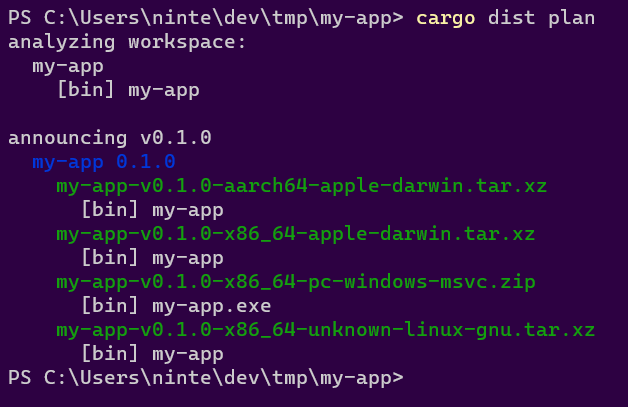
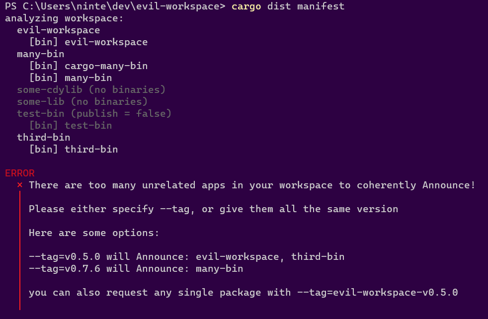

Introduction
cargo-dist distributes your binaries
The TL;DR is that with cargo-dist setup, just doing this:
git commit -am "release: 0.2.0"
git tag "v0.2.0"
git push
git push --tags
Will make this Github Release:
Or if you're using oranda, you'll get this website:
Plan, Build, Host, Publish, Announce
Cutting releases of your apps and distributing binaries for them has a lot of steps, and cargo-dist is quickly growing to try to cover them all!
To accomplish this, cargo-dist functionality can be broken up into two parts:
- building (planning the release; building binaries and installers)
- distributing (hosting artifacts; publishing packages; announcing releases)
The build functionality can be used on its own if you just want some tarballs and installers, but everything really comes together when you use the distribution functionality too.
Building
As a build tool, cargo-dist can do the following:
- Pick good build flags for "shippable binaries"
- Make tarballs and installers for the resulting binaries
- Generate machine-readable manifests so other tools can understand the results
That's a short list because "we make installers" is doing a lot of heavy lifting. Each installer could be (and sometimes is!) an entire standalone tool with its own documentation and ecosystem.
Distributing
As a distribution tool, cargo-dist gets to flex its biggest superpower: it generates its own CI scripts. For instance, enabling GitHub CI with cargo dist init will generate release.yml, which implements the full pipeline of plan, build, host, publish, announce:
- Plan
- Waits for you to push a git tag for a new version (v1.0.0, my-app-1.0.0...)
- Selects what apps in your workspace to announce new releases for based on that tag
- Generates a machine-readable manifest with changelogs and build plans
- Build
- Spins up machines for each platform you support
- Builds your binaries and tarballs
- Builds installers for your binaries
- Publish:
- Uploads to package managers
- Host + Announce:
- Creates (or edits and undrafts) a GitHub Release
- Uploads build artifacts to the Release
- Adds relevant release notes from your RELEASES/CHANGELOG
(Ideally "host" would come cleanly before "publish", but GitHub Releases doesn't really properly support this kind of staging, so we're forced to race the steps a bit here. Future work may provide a more robust release process.)
Most of the scripts roughly amount to "install cargo-dist", "run it exactly once", "upload the artifacts it reported". We want you to be able to copy that one cargo-dist invocation CI did, run it on your machine, and get the same results without any fuss (not to bit-level precision, but to the kinds of precision normal people expect from cargo builds). No setting up docker, no weird linux-only shell scripts that assume a bunch of tools were setup in earlier CI steps.
Of course even if we perfectly achieve this ideal, "you can run it locally" and "you want to run it locally" are different statements.
Check Your Release Process Early And Often
To that point, release.yml can now run partially in pull-requests. The default is to only run the "plan" step, which includes many integrity checks to help prevent "oops the release process is broken and we only found out when we tried to cut a release".
You can also crank the pull-request mode up to include the "build" step, in which case the PR Workflow Summary will include an artifacts.zip containing all the build results. We don't recommend keeping this on all the time (it's slow and wasteful), but it can be useful to temporarily turn on while testing a PR.

Install
- Use The Installer Scripts
- Build From Source With Cargo
- Install Prebuilt Binaries With cargo-binstall
- Installation on Arch Linux
- Download Prebuilt Binaries From Github Releases
Surprise! The tool for prebuilt shippable binaries has way too many ways to install it!
Whichever way you choose to install it, it should be invocable as cargo dist .... If you insist on invoking the binary directly as cargo-dist you must still add the extra dist arg and invoke it as cargo-dist dist ... (a quirk of the way cargo invokes subcommands).
Use The Installer Scripts
macOS and Linux (not NixOS, Alpine, or Asahi):
curl --proto '=https' --tlsv1.2 -LsSf https://github.com/axodotdev/cargo-dist/releases/latest/download/cargo-dist-installer.sh | sh
Windows PowerShell:
irm https://github.com/axodotdev/cargo-dist/releases/latest/download/cargo-dist-installer.ps1 | iex
Build From Source With Cargo
cargo install cargo-dist --locked
Install Prebuilt Binaries With cargo-binstall
cargo binstall cargo-dist
Installation on Arch Linux
Arch Linux users can install cargo-dist from the extra repository using pacman:
pacman -S cargo-dist
Download Prebuilt Binaries From Github Releases
Way-Too-Quickstart
TLDR: cargo-dist is a souped up version of
cargo buildwhich handles building tarballs and installers. It also knows how to generate Github CI for orchestrating itself and uploading its output to a new GitHub Release. You can use cargo-dist if you don't care about that CI stuff, but this guide assumes that you do.This quickstart is a bit too quick because there's some important nuances to "announcing and building releases" that depend on the way you like to structure and version your workspace. We will blatantly ignore those nuances and show you the Happiest Happy Path (a workspace with one crate that defines a binary). Checkout the workspace guide for more details on what you should actually do.
Setup
Setting up just requires you to install cargo-dist and then run cargo dist init in your Cargo workspace. This command interactively walks you through configuration options, and should be run again whenever you want to change your settings or want to update cargo-dist.
Just to really emphasize that: cargo dist init is designed to be rerun over and over, and will preserve your settings while handling any necessary updates and migrations. Always Be Initing.
Initial Setup
Since this is the way-too-quickstart, we pass --yes to auto-accept all defaults on our first setup!
# install tools (build from source is the most portable option)
cargo install cargo-dist
# setup cargo-dist in your project (--yes to accept defaults)
cargo dist init --yes
git add .
git commit -am "chore: wow shiny new cargo-dist CI!"
The one-time setup will add a decent default configuration to your root Cargo.toml and generate CI for orchestrating itself in .github/workflows/release.yml. If the CI file isn't created, this probably means you don't have repository = "https://github.com/..." consistently set in your Cargo.toml(s).
Adding Installers
The most common reason to update cargo-dist or mess with its config is to add a new installer, which is basically our blanket term for anything more fancy than tarballs (curl-sh scripts, npm packages, msi installers, ...).
You can skip this step for now and just test out the basics the initial setup gives you. Each individual installer should have a guide that assumes you did the initial setup.
The tl;dr of those guides is "run cargo dist init again, select the installer you want to add, and fill in any extra details that are needed".
Test It Out
There are a several ways to test out cargo-dist before committing to running a proper release:
- build for the current platform (
cargo dist build) - check what CI will build (
cargo dist plan) - check the release process on pull-requests
Build For The Current Platform
cargo dist build

The build command will by default try to build things for the computer you're running it on. So if you run it on linux you might get a tar.xz containing your binary and an installer.sh, but if you run it on windows you might get a zip and an installer.ps1.
cargo-dist will then spit out paths to the files it created, so you can inspect their contents and try running them (note that installer scripts probably won't be locally runnable, because they will try to fetch their binaries from GitHub).
Check What CI Will Build
cargo dist plan

The plan command should be running the exact same logic that cargo-dist's generated CI will run, but without actually building anything. This lets you quickly check what cutting a new release will produce. It will also try to catch any inconsistencies that could make the CI error out.
Check The Release Process On Pull-Requests
As of cargo-dist 0.3.0, we now by default run the "plan" step of your release CI on every pull-request so that we can catch breakage to your release process as early as possible. This will work even for a pull-request that sets up cargo-dist for the first time, so you can be confident you're landing something that works.
You can also crank this up by setting pr-run-mode = "upload", which will run all the build steps as well, and upload the results to the PR's Workflow Summary as an "artifacts.zip". This is great for making sure the windows build works even if you only have a linux machine, or vice-versa. Although you should probably only keep it on temporarily, as it's very slow and wasteful to build all those shippable artifacts for every PR.
Cut A Release (Trigger Github CI)
cargo-dist largely doesn't care about the details of how you prepare your release, and doesn't yet provide tools to streamline it. All it cares about is you getting your release branch into the state you want, and then pushing a properly formatted git tag like "v0.1.0". Here's a super bare-bones release process where we're releasing by just pushing a bunch of stuff to main branch (but it would work just as well with PRs and release branches):
# <manually update the version of your crate, run tests, etc>
# commit and push to main (can be done with a PR)
git commit -am "release: version 0.1.0"
git push
# actually push the tag up (this triggers cargo-dist's CI)
git tag v0.1.0
git push --tags
# publish to crates.io (optional)
cargo publish
The important parts are that you update the crates you want to release/announce to the desired version and push a git tag with that version.
At this point you're done! The generated CI script should pick up the ball and create a Github Release with all your builds over the next few minutes!
Updating
Just
cargo dist init
That's it!
Rerun init as much as you want, it should always preserve your old settings, and should never break anything (if it does, it's a bug!).
If you have a project with cargo-dist setup on it, and want to upgrade to a new version, all you should ever need to do is locally install the new version of cargo-dist and run cargo dist init.
If you're simply adjusting your cargo-dist config, you should also rerun cargo dist init to potentially get informed of new features/constraints your change runs into. It also ensures that things like your ci.yml are updated to reflect your new config. Basically every other cargo-dist command should error out if you have to rerun init, so you won't get far if you don't.
We recommend running without -y for reruns, because this is the chance cargo-dist has to tell you about new features, or additional configuration that pairs with any adjustments you may have made. It will take that chance to ask you if you want to enable the feature or change the default value.
In general the init command is designed to do incremental updates to your installation, and "first setup" is just a special case of this, where every incremental update is applicable.
The command usually uses the absence of a setting in your config to determine if a feature has been setup before. As such, even though cargo-dist generally has default values for every piece of config, init will aggressively write the default back to your config to let future invocations know they don't need to ask about it.
Which also means if you missed a prompt or want to reconfigure a feature, deleting the relevant setting from your config and rerunning init should work.
There are two settings that init will always prompt you for:
- what platforms do you want to build for
- what installers do you want to have
So if you ever want to add a new platform or installer, rerunning cargo dist init is a great way to do that -- and then it can ask followup questions if you turn on a new installer!
Generic Builds
since 0.5.0
Although cargo-dist was originally designed specifically for Cargo-based builds, we've introduced experimental features to allow you to use it to build and distribute any software written in any language. This feature is currently a prerelease: details may change before it becomes stable.
Examples
Configuration
In order for cargo-dist to recognize your application, it requires a TOML configuration file named dist.toml. This file is similar to Cargo's Cargo.toml, so users who are already familiar with Cargo should feel comfortable right away. Many of dist.toml's fields are identical to Cargo.toml, but there are a few extra fields specific to this file.
dist.toml has two mandatory sections: package, which you write yourself and which contains information about your application; and dist, which contains cargo-dist's configuration and which cargo-dist init generates for you.
To get started, write a dist.toml containing just a package section. A simple one looks like this:
[package]
# Your app's name
name = "my_app"
# The current version; make sure to keep this up to date!
version = "0.1.0"
# The URL to the git repository; this is used
repository = "https://example.com"
# The executables your app produces
binaries = ["main"]
# The build command cargo-dist runs to produce those binaries
build-command = ["make"]
Quickstart
Once you've produced a configuration file, you can run cargo dist init and let cargo-dist generate its own configuration. From here, the build and usage process looks very much like the normal cargo-dist setup; for more information, check the main quickstart documentation.
Understanding build commands
Build commands are the core difference between these builds and regular cargo-dist. Since we don't have Cargo to rely on to tell us how to build your package, it's up to you to tell us how instead.
As an example, the above application is a C program with a simple makefile-based buildsystem. All you need to run to build this program is make, so we specified build-command = ["make"]. If your app has a more complex build that will require multiple commands to run, it may be easier for you to add a build script to your repository. In that case, build-command can simply be a reference to executing it:
build-command = ["./build.sh"]
We expose a special environment variable called CARGO_DIST_TARGET into your build. It contains a Rust-style target triple for the platform we expect your build to build for. Depending on the language of the software you're building, you may need to use this to set appropriate cross-compilation flags. For example, when cargo-dist is building for an Apple Silicon Mac, we'll set aarch64-apple-darwin in order to allow your build to know when it should build for aarch64 even if the host is x86_64.
On macOS, we expose several additional environment variables to help your buildsystem find dependencies. In the future, we may add more environment variables on all platforms.
CFLAGS/CPPFLAGS: Flags used by the C preprocessor and C compiler while building.LDFLAGS: Flags used by the C linker.PKG_CONFIG_PATH/PKG_CONFIG_LIBDIR: Paths forpkg-configto help it locate packages.CMAKE_INCLUDE_PATH/CMAKE_LIBRARY_PATH: Paths forcmaketo help it locate packages' configuration files.
Mandatory package fields
These package fields are mandatory for cargo-dist to be able to build your package:
name: Your application's name.version: The application's version. Currently, this must be in a Semver-compatible format.repository: The URL to a git repository containing your application's source code.binaries: An array of one or more executables your application's build will produce. The strings within this array are paths relative to your application's build directory; for example, if you produce a binary namedmainwithin the./srcdirectory, you can specify["src/main"].build-command: The command cargo-dist should run in order to build your application. This is an array of one or more strings; the first string is the command cargo-dist will run, and any subsequent strings are arguments to pass to that command.
Optional package fields
All of these fields and their definitions are identical to the ones defined by [Cargo.lock][cargo-lock].
cstaticlibs: An array of one or more C static libraries (.afiles) produced by your application's build.cdynamiclibs: An array of one or more C dynamic libraries produced by your application's build.changelog: The path to the application's changelog within its source code. This will be used for the text of release announcements.documentation: The URL to where the application's documentation can be accessed.description: A human-readable description of the application.readme: The path to the application's README within its source code.authors: An array containing the names of the application's developers.license: The application's license, as an SPDX identifier.license-files: An array containing a list of one or more license files within the source code.
Installers
The core functionality of cargo-dist is to build your binaries and produce tarballs / zips containing them. Basically every other kind of output it produces is considered an "installer" that helps download/install/run those binaries.
Note that we use the term "installer" very loosely -- if it's fancier than a tarball, it's an installer to us!
Supported Installers
Currently supported installers include:
- shell: a shell script that fetches and installs executables (for
curl | sh) - powershell: a powershell script that fetches and installs executables (for
irm | iex) - npm: an npm project that fetches and runs executables (for
npx) - homebrew: a Homebrew formula that fetches and installs executables
- msi: a Windows msi that bundles and installs executables
These keys can be specified via installer in your cargo-dist config. The cargo dist init command provides an interactive UI for enabling/disabling them.
The above installers can have one of two strategies: fetching and bundling (defined below). Currently each installer is hardcoded to one particular strategy, but in the future we may make it configurable.
Future Installers
The following installers have been requested, and we're open to supporting them, but we have no specific timeline for when they will be implemented. Providing additional info/feedback on them helps us prioritize the work:
- linux docker image containing binaries
- linux flatpak
- macOS cask
- macOS dmg / app
- pypi package
- windows winget package
Fetching Installers
Fetching installers are thin wrappers which detect the user's current platform and download and unpack the appropriate archive from a server.
In exchange for requiring a well-defined Artifact URL and an internet connection at install-time, this strategy gives you a simple and efficient way to host prebuilt binaries and make sure that all users get the same binaries regardless of how the installed your application.
Fetching installers are also easy to make "universal" (cross-platform), so your installing users don't need to care about the OS or CPU they're using -- the installer will handle that for them.
Installers which support fetching:
- shell: a shell script that fetches and installs executables (for
curl | sh) - powershell: a powershell script that fetches and installs executables (for
irm | iex) - npm: an npm project that fetches and runs executables (for
npx) - homebrew: a Homebrew formula that fetches and installs executables
Bundling Installers
Bundling installers contain the actual binaries they will install on the user's system.
These installers can work without any internet connection, which some users will demand or appreciate.
Bundling requires a fundamental compromise when it comes to "universal" (cross-platform) installers, as any installer that wants to support e.g. Intel macOS and Apple Silicon macOS will need to include both binaries, even if only one will ever be used.
For this reason all bundling installers are currently single-platform, requiring the installing user to know what platform they're on.
Installers which support bundling:
- msi: a Windows msi that bundles and installs executables
Shell Script Installer
since 0.0.3
The "shell" installer provides a shell script (my-app-installer.sh) which detects the current platform, fetches the best possible archive from your Artifact URL, copies the binary into your install-path, and attempts to add that path to the user's PATH (see the next section for details).
This kind of installer is ideal for bootstrapping setup on a fairly bare-bones system.
An "installer hint" will be provided that shows how to install via curl | sh, like so:
curl --proto '=https' --tlsv1.2 -LsSf https://github.com/axodotdev/cargo-dist/releases/download/v0.0.5/cargo-dist-v0.0.5-installer.sh | sh
Limitations/Caveats:
- Requires a well-defined Artifact URL
- Currently only really designed for "linux" and "macOS", and won't detect other platforms properly (and certainly won't play nice with things like nixOS).
- Cannot detect situations where musl-based builds are appropriate (static or dynamic)
- Relies on the user's installation of
tarandunzipto unpack the files - Relies on the the user's installation of
curlorwgetto fetch the files - Will throw out all files except for the binary, so the binary can't rely on assets included in the archive
- Cannot run any kind of custom install logic
In an ideal world all of these caveats improve (except for maybe relying on tar/unzip/curl/wget, that's kinda fundamental).
Adding things to PATH
Here is a more fleshed out description of how the shell installer attempts to add the install-path to the user's PATH, and the limitations of that process.
The most fundamental limitation is that installers fundamentally cannot edit the PATH of the currently running shell (it's a parent process). Only an explicit source some_file (or the more portable . some_file) can do that. As such, it benefits an installer to try to install to a directory that will already be on PATH (such as CARGO_HOME). Otherwise all we can do is prompt the user to run source themselves after the installer has run (or restart their shell to freshly source rcfiles).
The process we use to add install-path to the user's PATH is roughly the same process that rustup uses (hopefully making us harmonious with running rustup before/after one of our installer scripts). In the following description we will use $install-path as a placeholder for the path computed at install-time where the binaries get installed. Its actual value will likely look something like $HOME/.myapp or $HOME/.cargo/bin.
- we generate a shell script and write it to
$install-path/env(let's call this$env-path)- the script checks if
$install-pathis in PATH already, and prepends it if not - prepending is used to ideally override system-installed binaries, as that is assumed to be desired when explicitly installing with not-your-system-package-manager
- the
envscript will only be added if it doesn't already exist - if
install-path = "CARGO_HOME", then$env-pathwill actually be in the parent directory, mirroring the behaviour of rustup
- the script checks if
- we add
. $env-pathto$HOME/.profile- this is just a more portable version of
source $install-path/env - this line will only be added if it doesn't exist (we also check for the
sourceequivalent) - the file is created if it doesn't exist
- rustup shotgun blasts this line into many more files like .bashrc and .zshenv, while still lacking proper support for fish and other more obscure shells -- we opted to start conservative with just .profile
- this is just a more portable version of
- if
$HOME/.profilewas edited, we prompt the user tosource "$env-path"or restart their shell- although this is less portable than
. "$env-path", it's very easy to misread/miscopy the portable version (not as much of a concern for an rcfile, but an issue for humans) - hopefully folks on platforms where this matters are aware of this issue (or they can restart their shell)
- although this is less portable than
PowerShell Script Installer
since 0.0.3
This provides a powershell script (my-app-installer.ps1) which detects the current platform, fetches the best possible archive from your Artifact URL, copies the binary into your install-path, and attempts to add that path to the user's PATH (see the next section for details).
This kind of installer is ideal for bootstrapping setup on a fairly bare-bones system.
An "installer hint" will be provided that shows how to install via irm | iex (the windows equivalent of curl | sh), like so:
irm https://github.com/axodotdev/cargo-dist/releases/download/v0.0.5/cargo-dist-v0.0.5-installer.ps1 | iex
Limitations/Caveats:
- Requires a well-defined Artifact URL
- Currently only really designed for "native windows", and won't detect other platforms properly
- Cannot detect situations where musl-based builds are appropriate (static or dynamic)
- Relies on the user's installation of
tarandExpand-Archiveto unpack the files - Relies on the the user's installation of
Net.Webclientto fetch the files - Won't work if run in cmd instead of powershell
- Will throw out all files except for the binary, so the binary can't rely on assets included in the archive
- Cannot run any kind of custom install logic
On the scale of Windows (where many people are still running Windows 7) commands like "Expand-Archive" and "tar" are in fact relatively new innovations. Any system that predates 2016 (PowerShell 5.0) certainly has no hope of working. I believe that someone running Windows 10 is basically guaranteed to work, and anything before that gets sketchier.
In an ideal world most of these caveats improve (except for maybe the requirement of PowerShell >= 5.0 which is not pleasant to push past).
Adding things to PATH
Here is a more fleshed out description of how the powershell installer attempts to add the install-path to the user's PATH, and the limitations of that process.
The most fundamental limitation is that installers fundamentally cannot edit the PATH of the currently running shell (it's a parent process). Powershell does not have an equivalent of source, so to the best of our knowledge restarting the shell is the only option (which if using Windows Terminal seems to mean opening a whole new window, tabs aren't good enough). As such, it benefits an installer to try to install to a directory that will already be on PATH (such as CARGO_HOME). (rustup also sends a broadcast WM_SETTINGCHANGE message, but we couldn't find any evidence that this does anything useful.)
The process we use to add install-path to the user's PATH is roughly the same process that rustup uses (hopefully making us harmonious with running rustup before/after one of our installer scripts). In the following description we will use $install-path as a placeholder for the path computed at install-time where the binaries get installed. Its actual value will likely look something like C:\Users\axo\.myapp or C:\Users\.cargo\bin.
- we load from the registry
HKCU:\Environment's "Path" Item - we check if
$install-pathis contained within it already - if not, we prepend it and write the value back
- prepending is used to ideally override system-installed binaries, as that is assumed to be desired when explicitly installing with not-your-system-package-manager
- if we edited the registry, we prompt the user to restart their shell
npm Installer
since 0.0.6
This provides a tarball containing an npm package (npm-package.tar.gz) which when installed into an npm project: detects the current platform, fetches the best possible archive from your artifact URL, and copies the binary into your node_modules. This can be used to install the binaries like any other npm package, or to run them with npx.
This kind of installer is ideal for making a native Rust tool available to JS devs.
An "installer hint" will be provided that shows how to install via npm like so:
npm install @axodotdev/cargodisttest@0.2.0
cargo-dist does not publish the package for you, you need to do that manually once the tarball is built. Conveniently, npm supports publishing from a url-to-a-tarball directly, and since 0.0.7 we make our tarballs look like "proper" npm package tarballs, so you can just do this:
npm publish URL_TO_TARBALL
You can find the URL to the tarball at the bottom of the Github Release, inside the collapsible "assets" dropdown (*-npm-package.tar.gz). The format of the url is:
<repo>/releases/download/<tag>/<app-name>-npm-package.tar.gz
Example:
https://github.com/axodotdev/oranda/releases/download/v0.0.3/oranda-npm-package.tar.gz
If you're cutting a stable release (not-prerelease), you can use the "latest" URL format:
https://github.com/axodotdev/oranda/releases/latest/download/oranda-npm-package.tar.gz
In the future we may introduce more streamlined CI-based publishing workflows.
You can set the @scope the package is published under with the npm-scope cargo-dist config.
We will otherwise do our best to faithfully translate any standard Cargo.toml values you set to an equivalent in the npm package.json format (name, version, authors, description, homepage, repository, keywords, categories...).
The package will also include an npm-shrinkwrap.json file for the npm packages the installer uses, this is the same as package-lock.json but "really for reals I want this to be respected even if it's installed into another project". Note that cargo install similarly disrespects Cargo.lock unless you pass --locked.
Limitations and Caveats
- Requires a well-defined artifact URL
- Cannot detect situations where musl-based builds are appropriate (static or dynamic)
- Relies on nodejs's builtin gzip support to unpack the files, which only works with .tar.gz
- Cannot run any kind of custom install logic
As a result of the .tar.gz limitation, cargo dist init will prompt you to change windows-archive and unix-archive to ".tar.gz" if you enable the npm installer, erroring if you decline.
Homebrew Installer
since 0.2.0
This provides a Homebrew formula which allows users to brew install your package. Since it installs to a location on the user's PATH, it provides a simple and convenient installation method for users who already have Homebrew available. When published to a tap (package repository), this gives your users an easy way to both install your package and to keep it up to date using brew update and brew upgrade. It fetches the same prebuilt macOS binaries as the shell installer.
cargo-dist can, optionally, publish your formula to a tap repository for you on every release. To enable this, add a tap field to your Cargo.toml pointing to a GitHub repository that you control and add homebrew to the publish-jobs field. The repository name must start with homebrew-. For example:
tap = "axodotdev/homebrew-formulae"
publish-jobs = ["homebrew"]
In order to write to a tap GitHub repository, cargo-dist needs a personal access token with the repo scope exposed as HOMEBREW_TAP_TOKEN. For more information on GitHub Actions secrets, consult this documentation.
Limitations/Caveats:
- Does not support creating a formula which builds from source
- Does not support Linuxbrew (Homebrew on Linux)
- Does not support Cask for more convenient GUI app installation
msi Installer
Since 0.3.0
This guide will walk you through setting up a bundling Windows msi installer. It assumes you've already done initial setup of cargo-dist, as described in the way-too-quickstart, and now want to add an msi to your release process.
(Just a bit of a warning, this stuff works but there's a few rough edges, please let us know if you run into any issues!)
Setup
We'll start with the bare-minimum and then explain what we did and how to modify it afterwards.
Setup Step 1: set "authors" in your Cargo.toml
msi requires you to specify a "manufacturer" for you application, which is by default sourced from the "authors" field in you Cargo.toml. If you dont have that field set, the next step will error out. If you have an authors entry like My Cool Company <support@mycoolcompany.org> then the manufacturer will be "My Cool Company".
Setup Step 2: run init and enable "msi"
Rerun cargo dist init and when it prompts you to choose installers, enable "msi".
Once init completes, some changes will be made to your project, check all of them in:
installers = ["msi"]will be added to[workspace.metadata.dist][package.metadata.wix]will be added to your packages with distable binaries. This is your msi-specific config. For now don't worry about it.wix/main.wxswill be created for each of your packages with distable binaries. This is a template for your msi. For now assume this file is completely managed by cargo-dist, and can't be hand-edited.
Setup Step 3: you're done! (time to test)
See the quickstart's testing guide for the various testing options.
If the above steps worked, cargo dist plan should now include an msi for each Windows platform you support.
cargo dist build is a bit trickier. Not only do you have to be on Windows to get an msi built, you also need to have the WiX v3 toolchain installed (WiX v4 isn't yet supported). If you don't the build will just error out. In GitHub CI the WiX v3 toolchain is pre-installed, so using PR testing is recommended.
The resulting msi should include the following functionality:
- (optional) EULA dialog
- A menu that lets you choose where to install and whether to add it to PATH
- Default install location is
%ProgramFiles%\{app_name}\(e.g.C:\Program Files\axolotlsay\) - Default is to add the install location to PATH
- Currently the only files that will be included are the app's binaries in a
binsubdir
- Default install location is
- If rerun, you will get an uninstall/reinstall menu
- If a newer version is run, it will automatically uninstall the old version
- If an older version is run, it will report that a newer version is installed and exit
- The application will appear in the Windows "Add or remove programs" menu and can be uninstalled from there
Certain licenses in your Cargo.toml like "Apache" or "MIT" (but not dual MIT/Apache) will get an auto-generated EULA that's just agreeing to the software license -- we know, that's not how software licenses work, but people seem to like to do it. See the section on advanced usage for how to set a more useful EULA.
How It Works
As you may suspect from the setup, we rely on the industry standard WiX v3 toolchain to generate your msi installers (WiX v4 isn't yet supported). The main.wxs format is its xml-based templating system. Some of the information about your app is baked into this template (binaries, descriptions, licenses...), while other information is sourced at build time (mostly the version).
If the template ever desyncs from the values it was generated from, commands like cargo dist plan (and therefore your pull request CI) will error out and ask you to rerun cargo dist init to regenerate it.
The values we added to [package.metadata.wix] are:
upgrade-guid = "SOME-RANDOM-GUID"(since 0.3.0)path-guid = "SOME-OTHER-RANDOM-GUID"(since 0.3.0)license = false(since 0.5.0)eula = false(since 0.5.0)
The two GUIDs are used by Windows to determine that two MSIs with different versions refer to the same application and install location, which is required for it to properly handle things like upgrades. They are persisted in your Cargo.toml to keep them stable across regenerations of main.wxs.
The license/EULA settings are there to disable the auto-license/EULA feature of cargo-wix. That feature would look at your package's license and potentially turn it into a EULA agreement. While this is a thing some folks want, most of our users aren't interested in getting their end-users to "agree to the MIT License". You can opt back into auto-EULAs by setting both of those to true (if you just delete the keys cargo-dist will keep adding them back as false).
All of the logic for generating wxs files is part of cargo-wix, which cargo-dist includes as a library. It's a great project we happily contribute to, although some TLC is still needed to make the integration perfect (some of its warnings/errors may mention its own CLI's flags, and those sure won't work if you pass them to cargo-dist). The [package.metadata.wix] config is purely cargo-wix's, see their docs for all the knobs it exposes.
Advanced Usage
There are two paths for advanced usage: managed and unmanaged. We recommend the managed approach, but the unmanaged approach is there for true power users.
Managed Advanced Usage
If you want cargo-dist to be able to keep your main.wxs consistent with the definitions in your Cargo.tomls, then all you have available is the knobs exposed in [package.metadata.wix] -- see cargo-wix's docs for details.
Unmanaged Advanced Usage
If you're not worried about keeping main.wxs consistent, then you can choose to dive deep into the full power of WiX v3 by adding allow-dirty = ["msi"] to your cargo-dist config. Once you do this cargo-dist will stop trying to update it, and won't check if it's out of date.
At that point you can make whatever hand-edits you want to main.wxs, as long as you still use the variables that cargo-wix injects into the template at build-time for things like versions and binary paths.
See WiX v3's docs for all the things their format supports.
Artifacts
cargo-dist exists to help you distribute your binaries, which involves generating a lot of different files which we call Artifacts. Archives are the baseline artifacts that contain your binaries, and installers are the fancy artifacts that make it easy to install or run the binaries.
- Archives: tarballs/zips containing your binaries
- Installers: things that help fetch/install archives
- Checksums: hashes of other artifacts
- Symbols: debuginfo/symbols/sourcemaps of your binaries
Archives
Archives are the primary output of cargo-dist: a single file (zip or tarball) containing prebuilt executables/binaries for an app, along with additional static files like READMEs, LICENSEs, and CHANGELOGs. The docs previously referred to these as "executable-zips", so if you ever see that term floating around, this is what's being talked about.
When you tell us to build an app for a platform we will always make an archive for it.
Fetching installers will fetch and unpack archives from wherever you uploaded them. Bundling installers will use an exact copy of the binary stored in the archive, but may differ on other included files.
Auto-Detected Files
We will always auto-detect READMEs, LICENSES, and CHANGELOGs with the following logic (described more below):
- README: package.readme, or find
README* - LICENSE: package.license-file, or find
LICENSE*/UNLICENSE* - CHANGELOG: find
CHANGELOG*/RELEASES*
"Find XYZ*" means we will look for a file whose name starts with "XYZ" in the same directory as the Cargo.toml for a package that defines the app. If no such file is found, we will also search for it in the same directory as the workspace's Cargo.toml (so packages "inherit" these files from the workspace).
It is generally assumed that a directory only contains one of each kind of file. If multiple possible matches are in the same directory we will arbitrarily pick the first one we saw, so don't rely on that.
Auto-detected files are first and foremost auto-included into the archive, however they can also be used for other things. For instance, the autodetected CHANGELOG is fed into our CHANGELOG features.
Archive Contents
The "root" of an archive is either the actual root directory of the archive (zips); or a directory with the same name as the archive, but without the extension (tarballs). This difference is for compatibility/legacy reasons, and can be smoothed away by unpacking tarballs with tar's --strip-components=1.
An app's archive always includes its binaries at the root.
By default auto-detected files for a package are auto-included into its archives at the root of the package. The auto-includes config controls this behaviour.
The include can be used to manually add specific files/directories to the root of the archive.
Archive Formats
Archives can be zips or tarballs (gz, xz, or zstd).
By default we make .zip on windows and .tar.xz elsewhere, but this can be configured with windows-archive and unix-archive features.
Build Flags
We currently always build with --profile=dist
By default we build with --workspace to keep things consistent, but this can be configured with the precise-builds config (see those docs for details on when precise-builds will be force-enabled).
By default we build your packages with default features, but this can be configured with the features, default-features, and all-features configs.
When targeting windows-msvc we will unconditionally append "-Ctarget-feature=+crt-static" to your RUSTFLAGS, which should just be the default for rustc but isn't for legacy reasons.
We don't really support cross-compilation, but we'll faithfully attempt the compile by telling rustup to install the toolchain and passing --target to cargo as instructed -- it will probably just fail. On macOS cross-compiles between Intel and Apple Silicon will work. linux-musl is slated for a future version.
Code Signing
"Code Signing" is a very overloaded term, with wildly varying implementations that accomplish different goals. For instance, Linux users are currently very big on sigstore as a fairly turn-key code signing solution, but neither Windows nor macOS acknowledge its existence (and likely never will, as the benefits of sigstore completely defeat the stated purpose of code signing requirements on those platforms).
Roughly speaking, codesigning can be broken up into "Is this app made by the developer?" and "Can I trust apps made by this developer?". Tools like sigstore are focused on the former, while Windows/macOS only care about the latter. They want you to pay some money and jump through administrative hoops. They also expect you to pay completely different groups and go through completely different hoops, so each platform requires a completely different solution.
Checksums
By default cargo-dist will generate a matching checksum file for each archive it generates. The default checksum is sha256, so for instance my-app-x86_64-pc-windows-msvc.zip will also come with my-app-x86_64-pc-windows-msvc.zip.sha256 that tools like sha256sum can use. This can be configured with the checksum config.
Fetching installers can also use these checksums (or ones baked into them) to validate the integrity of the files they download. With https and unsigned checksums the security benefit is minimal, but it can catch more boring problems like data corruption.
The homebrew installer actually ignores your checksum setting and always uses sha256 hashes that are baked into it, as required by homebrew itself.
Updating the other fetching installers to use these checksums is still a work in progress.
Symbols
This feature is currently disabled pending a rework, but basically we want to save your debuginfo/symbols/sourcemaps in the form of pdbs, dSYMs, etc. This will automatically happen as a side-effect of building archives.
CI
All of the distribute functionality of cargo-dist depends on some kind of CI integration to provide things like file hosting, secret keys, and the ability to spin up multiple machines.
A CI backend can be enabled with the ci config. cargo-dist's core CI job can be customized using several extra features.
Supported CI Providers
- github: use GitHub Actions and uploads to GitHub Releases
A quick tour of the CI process
The CI process is divided into several stages which happen in order. Understanding these steps will help you follow the release process and, if necessary, debug failures.
- plan: cargo-dist calculates which builds to run, and which platforms to build for, and enumerates the files that builds are expected to produce. The output of this step is saved and shared between steps and is also included in the final release as
dist-manifest.json. - build-local-artifacts: cargo-dist builds native binaries and produces tarballs.
- build-global-artifacts: cargo-dist builds platform-independent artifacts such as installers.
- host: cargo-dist decides whether to proceed with publishing a release and uploading artifacts.
- publish: Artifacts are uploaded and, if used, the Homebrew formula is released.
- announce: The release is created with its final non-draft contents.
Future CI Providers
The following CI providers have been requested, and we're open to supporting them, but we have no specific timeline for when they will be implemented. Providing additional info/feedback on them helps us prioritize the work:
GitHub CI
since 0.0.3
The GitHub CI backend provides a "Release" Workflow that is triggered by pushing a tagged commit to your repository. It uses the tag to determine which packages you're trying to publish, and builds and uploads them to a GitHub Release.
Setup
cargo-dist is currently very eager to setup the GitHub CI backend, so it's pretty easy to do! Most likely it was automatically setup the first time you ran cargo dist init. If you followed the way-too-quickstart, then you should also have it setup.
Setup Step 1: set "repository" in your Cargo.toml
You probably already have it set, but if you don't, now's the time to do it. We need to know the URL of your GitHub repository for several features, and the next step will fail without it.
Setup Step 2: run init and enable GitHub CI
Run cargo dist init on your project.
If you did the previous step, you should get prompted to "enable Github CI and Releases?", with the default answer being "yes". Choose yes.
You will also get prompted to "check your release process in pull requests?", with the default answer being "plan - run 'cargo dist plan' on PRs (recommended)". Choose that option.
Once init completes, some changes will be made to your project, check all of them in:
ci = ["github"]should be added to[workspace.metadata.dist]./github/workflows/release.ymlshould be created, this is your Release Workflow
Setup Step 3: you're done! (time to test)
See the quickstart's testing guide for the various testing options.
The easiest testing option for this is to open a pull-request for everything you checked in -- it should run the plan step of your release CI as part of the PR.
Advanced Usage
Here are some more advanced things you can do with GitHub CI.
Build and upload artifacts on every pull request
since 0.3.0
By default, cargo-dist will run the plan step on every pull request but won't perform a full release build. If these builds are turned on, the resulting pull request artifacts won't be uploaded to a release but will be available as a download from within the CI job. To enable this, select the "upload" option from the "check your release process in pull requests" question in cargo-dist-init or set the pr-run-mode key to "upload" in Cargo.toml's cargo-dist config. For example:
pr-run-mode = "upload"
Bring your own release
since 0.2.0
By default, cargo-dist will want to create its own GitHub Release and set the title/body with things like your CHANGELOG/RELEASES and some info about how to install the release. However if you have your own process for generating the contents of GitHub Release, we support that.
If you set create-release = false in your cargo-dist config, cargo-dist will assume a draft Github Release for the current git tag already exists with the title/body you want, and just upload artifacts to it. At the end of a successful publish it will undraft the GitHub Release for you.
Limitations
- Currently, the only supported package managers are Apt (Linux), Chocolatey (Windows) and Homebrew (macOS).
- GitHub currently only provides x86_64 macOS runners. When you request packages, the Intel versions will always be installed regardless of build targets. While Apple Silicon builds can use CLI tools installed this way, you will not be able to build software for Apple Silicon if it requires C libraries from Homebrew.
Hand-editing release.yml
since 0.3.0
The happy-path of cargo-dist has us completely managing release.yml, and since 0.3.0 we will actually consider it an error for there to be any edits or out of date information in release.yml.
If there's something that cargo-dist can't do that makes you want to hand-edit the file, we'd love to hear about it so that you can stay on the happy-path!
However we know you sometimes really need to do those hand-edits, so there is a way to opt into it. If you set allow-dirty = ["ci"] in your cargo-dist config, cargo-dist will stop trying to update the file and stop checking if it's out of date.
Although you're not "using cargo-dist wrong" if you do this, be aware that you are losing access to a lot of the convenience and UX benefits of cargo-dist. Every piece of documentation that says "just run cargo dist init" may not work correctly, as a new feature may require the CI template to be updated. Even things as simple as "updating cargo-dist" will stop working.
We have put a lot of effort into minimizing those situations, with plan increasingly being responsible for dynamically computing what the CI should do, but that's not perfect, and there's no guarantees that future versions of cargo-dist won't completely change the way CI is structured.
Fiddly build task settings
since 0.0.1
Here's a grab-bag of more random settings you probably don't want to use, but exist in case you need them.
By default cargo-dist lets all the build tasks keep running even if one of them fails, to try to get you as much as possible when things go wrong. fail-fast = true can be set to disable this.
By default cargo-dist breaks build tasks onto more machines than strictly necessary to create the maximum opportunities for concurrency and to increase fault-tolerance. For instance if you want to build for both arm64 macOS and x64 macOS, that could be done on the same machine, but we put it on two machines so they can be in parallel and succeed/fail independently. merge-tasks = true can be set to disable this.
Checking what your build linked against
since 0.4.0
Although most Rust builds are statically linked and contain their own Rust dependencies, some crates will end up dynamically linking against system libraries. It's useful to know what your software picked upsometimes this will help you catch things you may not have intended, like dynamically linking to OpenSSL, or allow you to check for package manager-provided libraries your users will need to have installed in order to be able to run your software.
cargo-dist provides a linkage report during your CI build in order to allow you to check for this. For macOS and Linux, it's able to categorize the targets it linked against to help you gauge whether or not it's likely to cause problems for your users. To view this, check the detailed view of your CI build and consult the "Build" step from the upload-local artifacts jobs.
This feature is defined for advanced users; most users won't need to use it. It's most useful for developers with specialized build setups who want to ensure that their binaries will be safe for all of their users. A few examples of users who may need to use it:
- Users with custom runners with extra packages installed beyond what's included in the operating system;
- Users who have installed extra packages using cargo-dist's system dependency feature;
- Users whose cargo buildsystems include extra C dependencies.
The report is divided into categories to help you make sense of where these libraries are from and what it might mean for your users. These categories are:
- System: Libraries that come with your operating system. On Linux, these packages are all provided by the system's package manager, and the linkage report includes information about which package includes each library. Some of these packages will be included in the base OS, and will be safe to rely on, while you'll need to ensure your users have others. If you're using standard base images like GitHub Actions's and haven't installed additional packages using apt, the packages in this list should be preinstalled for your users. On macOS, these packages are shipped with the operating system and not managed by a package manager; you can always rely on these being there within the same version of macOS.
- Homebrew (macOS only): Libraries that are provided by the Homebrew package manager for macOS. These packages are not installed by default, so your users will need to have them installed in order to be able to use your software.
- Public (unmanaged): Libraries which are present in public locations, but which are not managed or provided by the system or a package manager. Because these are not standard parts of the operating system, your users will be unlikely to have them.
- Frameworks (macOS only): Frameworks, a special type of library provided by macOS. Frameworks installed in the
/Systemdirectory come with the operating system and are available to all users. - Other: A catch-all category for any libraries which don't fall in the previous categories.
Here's an example of what a linkage report looks like for a Linux binary;
axolotlsay (x86_64-unknown-linux-gnu):
Category Libraries
System /lib/x86_64-linux-gnu/libgcc_s.so.1 (libgcc-s1)
/lib/x86_64-linux-gnu/libpthread.so.0 (libc6)
/lib/x86_64-linux-gnu/libc.so.6 (libc6)
Homebrew
Public (unmanaged)
Frameworks
Other
Limitations
While the linkage report can be run locally, the report for Linux artifacts can only be run on Linux.
The Windows report is currently unable to provide information about the sources of libraries.
Customizing CI
cargo-dist's generated CI configuration can be extended in several ways: it can be configured to install extra packages before the build begins, and it's possible to add extra jobs to run at specific lifecycle moments.
In the past, you may have customized cargo-dist's generated CI configuration and used the allow-dirty = ["ci"] configuration option. With these new customization options, you may well not need to directly hand-edit cargo-dist's config any longer; we encourate migrating to these new tools.
Install extra packages
since 0.4.0
Sometimes, you may need extra packages from the system package manager to be installed before in the builder before cargo-dist begins building your software. Cargo-dist can do this for you by adding the dependencies setting to your Cargo.toml. When set, the packages you request will be fetched and installed in the step before build. Additionally, on macOS, the cargo build process will be wrapped in brew bundle exec to ensure that your dependencies can be found no matter where Homebrew placed them.
Sometimes, you may want to make sure your users also have these dependencies available when they install your software. If you use a package manager-based installer, cargo-dist has the ability to specify these dependencies. By default, cargo-dist will examine your program to try to detect which dependencies it thinks will be necessary. At the moment, Homebrew is the only supported package manager installer. You can also specify these dependencies manually.
For more information, see the configuration syntax.
Custom jobs
since 0.3.0 (publish-jobs) and 0.7.0 (other steps)
cargo-dist's CI can be configured to call additional jobs on top of the ones it has builtin. Currently, we support adding extra jobs to the the following list of steps:
plan-jobs(the beginning of the build process)build-local-artifacts-jobsbuild-global-artifacts-jobs- [
host-jobs][config-host-jobs] (pre-publish) - [
publish-jobs][config-publish-jobs] - [
post-announce-jobs][config-post-announce] (after the release is created)
Custom jobs have access to the plan, produced via the "plan" step. This is a JSON document containing information about the project, planned steps, and its outputs. It's the same format contained as the "dist-manifest.json" that will be included with your release. You can use this in your custom jobs to obtain information about what will be built. For more details on the format of this file, see the schema reference.
To add a custom job, you need to follow two steps:
- Define the new job as a reusable workflow using the standard method defined by your CI system. For GitHub actions, see the documentation on reusable workflows.
- Add the name of your new workflow file to the appropriate array in your
Cargo.toml's cargo-dist config, prefixed with a./. For example, if your job name is.github/workflows/my-publish.yml, you would write it like this:
publish-jobs = ["./my-publish"]
Here's an example reusable workflow written using GitHub Actions. It won't do any real publishing, just echo text to the CI output. First, create a file named .github/workflows/publish-greeter.yml with these contents:
name: Greeter
on:
# Defining workflow_call means that this workflow can be called from
# your main workflow job
workflow_call:
# cargo-dist exposes the plan from the plan step, as a JSON string,
# to your job if it needs it
inputs:
plan:
required: true
type: string
jobs:
greeter:
runs-on: ubuntu-latest
# This is optional; it exposes the plan to your job as an environment variable
env:
PLAN: ${{ inputs.plan }}
steps:
- name: Step 1
run: |
echo "Hello!"
echo "Plan is: ${PLAN}"
Then, add the following to your publish-jobs array:
publish-jobs = ["./publish-greeter"]
Running cargo-dist init for your tool will update your GitHub Actions configuration to make use of the new reusable workflow during the publish step.
Guide
The cargo-dist Guide is the "beginner" documentation that walks you through simple usage and then introduces more complex situations as you go. More advanced documentation can be found in "concepts".
If you have a Cargo Workspace with a single Cargo package that cargo install works for, and just want zips containing prebuilt binaries for the major desktop platforms, that should Just Work as described in the Way-Too-Quickstart. Things get more complicated if you want to:
- have more packages in your Cargo Workspace (libraries, multiple binaries, ...)
- have additional steps in your build (configure the system, add files, ...)
- build various kinds of installers (curl-sh scripts, npm packages, msi, ...)
Gonna be blunt and say that cargo-dist is still in early days and we still need to implement a lot of stuff to better support all the things people want to do with Shippable Builds. If what you want to do doesn't seem properly supported and we don't have an issue for it, absolutely file one so we can hash it out!
The guide will start by explaining the simple case, and then explain the more complicated cases.
Guide: A Simple Application
Let's start with the kind of simple Cargo Workspace you would get from cargo new my-app (or cargo init my-app): a single package that defines a binary target. This is exactly the situation the Way-Too-Quickstart should work perfectly for. Here we're going to take it a bit slower.
Our goal will be to setup a Github CI workflow that announces a new release of our application with a Github Release. The workflow will also build our application for the 3 major desktop platforms, wrap the binaries in zips/tarballs, and upload them to the Github Release. The Github Release's text will also include the relevant release notes from our RELEASES.md file.
The workflow will be triggered whenever you push a Git Tag specifying the application's new version, like "v1.0.0". Don't worry, you won't need to write those workflows yourself, cargo-dist will generate them for you!
TO BE EXTREMELY PEDANTIC: The workflow will trigger whenever Github sees that the git tag and the commit it refers to are part of the repo and the timestamp(?) of both(?) is after the commit that introduced the workflow's yml file. That last part is an absolute headache, and may require you to delete the tag both locally and on github if you created it before the workflow. Basically, setup cargo-dist before you start cutting releases!
Setup (and Updates)
To setup cargo-dist on our project (after we've installed it), we "need" to run cargo dist init, which will provide us with a series of interactive prompts and explanations to configure our project. The recommended option can always be selected by hitting ENTER, and you can automate that by just passing --yes.
You can rerun init as many times as you want, as it also functions as an "update" command for your config. This is especially convenient for updating your project to the version of cargo-dist you're running, as it will prompt you to do that whenever the versions don't match (refusing to proceed if declined).
cargo dist init
init on its own just edits your Cargo.toml to include the recommended defaults. If you have enabled CI support, it will also run cargo dist generate after setting things up. This ensures your config and your CI scripts are in sync, but will unfortunately clobber any hand-edits you made to the scripts.
Let's look at those defaults that were added (yes those comments are generated too, you will never stop me from adding more docs!!!):
# The profile that 'cargo dist' will build with
[profile.dist]
inherits = "release"
lto = "thin"
# Config for 'cargo dist'
[workspace.metadata.dist]
# The preferred cargo-dist version to use in CI (Cargo.toml SemVer syntax)
cargo-dist-version = "0.0.6"
# CI backends to support
ci = ["github"]
# The installers to generate for each app
installers = []
# Target platforms to build apps for (Rust target-triple syntax)
targets = ["x86_64-unknown-linux-gnu", "x86_64-apple-darwin", "x86_64-pc-windows-msvc", "aarch64-apple-darwin"]
If your config doesn't have
ci = ["github"]by default, then you probably don't haverepository = "https://github.com/..."consistently set in your Cargo.toml(s). The rest of this guide will assume you did. cargo-dist will work fine without it, you just won't get Github CI integration or installers.
The "dist" Profile
First let's talk about [profile.dist]. This is a custom Cargo Profile that cargo-dist will use to build your app. If you want to, you can use it yourself by passing --profile=dist to cargo (i.e. cargo run --profile=dist). We define a separate profile from the normal "release" one so that you can be comfortable giving your Shippable Builds more aggressive settings without making local development too tedious.
In this case the default profile cargo-dist recommends is essentially the same as --release (hence inherits = "release"), but with thin LTO enabled (lto = "thin"). This will make the build take longer, but produce more optimized builds.
cargo-dist uses the existence of [profile.dist] in your Cargo.toml to detect if your project has been properly initialized, and will generally refuse to run other commands otherwise. Sorry but you can't delete the profile!
The Workspace Config
Next let's talk about [workspace.metadata.dist]. Cargo allows other tools to include their own project-wide settings in this kind of metadata table. See config for the full set of options, but here we'll look at the defaults.
cargo-dist-version = "0.0.6" is cargo-dist recording its own version in your config for the sake of reproducibility and documentation. When you run generate the resulting CI scripts will use that version of cargo-dist.
ci = ["github"] lets subsequent runs of generate know what CI scripts to generate. Its presence also enables certain Github-specific features like generating the body for a Github Release and telling installers to fetch binaries from a Github Release. It will be enabled by default if you have repository = "https://github.com/..." consistently set in your Cargo.toml(s). ("github" is currently the only supported CI backend.)
installer = [] is just saying that we haven't enabled any installers. Installers are intentionally excluded here to keep this example focused.
targets = ... is listing the platforms to build your application for. In this case, because we didn't specify the targets with --target, init has selected the "recommended desktop suite": "x64 linux", "x64 macos", "x64 windows", and "arm64 macos (Apple silicon)". In v0.0.6 these are the only properly supported choices, because we wanted to get the core of cargo-dist solid first. Future versions should hopefully introduce proper support for important targets like "musl linux".
The CI Script
Because we set ci = ["github"], init invoked generate for us. Creating the Github CI workflow we wanted at .github/workflows/release.yml. Rather than including the full text here, I'll just link cargo-dist's own release.yml, because cargo-dist is self-hosting and has an extremely boring build/config that is basically equivalent to the one we're looking at in this example.
The first thing you might notice is that there's a lot of comments describing the script. As always: you will never stop me from writing more docs and shoving them in your face. Actually ok you can stop me because I need to write a lot of docs here and those comments are already decent docs. Feel free to peruse them to get a feel for it.
One thing I want to emphasize is that each job of the workflow essentially boils down to "install cargo-dist, run cargo-dist exactly once, then upload the files it tells you to". Ideally this means you can run that one cargo-dist command and get the same things that CI produced!
Anyway, the CI totally does all the things we said it should! Yay!
Finishing Setup
Now that we've run cargo dist init, all we need to do is commit the results and push them up:
git add .
git commit -am "wow cool new cargo-dist CI!"
git push
Actually wait we should... probably test that we set things up properly? The devil's always in the details when it comes to CI, but we can do some initial checking of things with the plan command:
cargo dist plan
plan is the same as build but it doesn't actually run the build and defaults to reporting info for all platforms. This makes it ideal for asking cargo-dist about the full Announcement a CI run would produce.
If everything went right, you should see something like the following:
.
This output has two parts: "analyzing workspace" and "announcing"
"analyzing workspace" describes what cargo-dist found in your workspace. In this case there's a package called "my-app" with a binary target of the same name.
"announcing v0.1.0" tells us the tag that should be pushed to announce a release of the current workspace ("v0.1.0"). Underneath it we see that the announcement will include "my-app 0.1.0" as expected. Underneath that we see 4 artifacts will be produced and uploaded:
- The Intel macOS build: my-app-v0.1.0-x86_64-apple-darwin.tar.xz
- The M1 macOS build: my-app-v0.1.0-aarch64-apple-darwin.tar.xz
- The Windows build: my-app-v0.1.0-x86_64-pc-windows-msvc.zip
- The Linux build: my-app-v0.1.0-x86_64-unknown-linux-gnu.tar.xz
It also helpfully lists the contents of each zip. In this case I didn't properly setup my project at all, so it only contains a prebuilt binary. If I actually add files like README.md, LICENSE, and RELEASES.md, cargo-dist will helpfully pick those up and include them (disable this with the auto-includes=false config):

If you add --output-format=json you'll get a full machine-readable output instead, and have locally recreated the first step of the generate CI!
Cutting Releases
With all our one-time setup done, we're ready to cut a release! This can be streamlined a lot with cargo-release which will do essentially everything we're about to go through with a single command (see the guide on that), but it's helpful to understand the actual steps in case cargo-release doesn't fit your usecase or if you need to debug issues.
The first step is to do all the things you would do to prep a release: update docs, update release notes, bump version numbers in Cargo.tomls, run tests, and so on.
At this point we're confident and want to release things for real. Once again, we can check what cargo-dist thinks should happen with the plan command:
cargo dist plan
Similarly you can check that cargo publish will work with the --dry-run flag:
cargo publish --dry-run
If both of those seem happy, you're ready to release! All we need to do is push up a commit that has the Git Tag that plan suggested. As we've seen in previous sections, it's recommending "v0.1.0" for our example app, so let's use that:
# Publish to a Github Release with cargo-dist
git commit -am "Chore: Release 0.1.0"
git tag "v0.1.0"
git push
git push --tags
# Publish to crates.io
cargo publish
and that's... it! If everything's working, your CI should spin up a "Release" workflow that cargo-dist generated for you, and after a few minutes the "Releases" section of your repo should have all the results populated with something like this:
Oops! There's some extra features in that screenshot that I haven't explained yet! This includes the "Release Notes" feature and a few installers. Since we're talking about Releasing, let's talk about Release Notes.
Release Notes
If your project has a top-level RELEASES/CHANGELOG file like "RELEASES.md", then cargo-dist will automatically try to use it as part of your Announcement (Github Release). We use the parse-changelog library to try to find a heading for the version you're releasing, and if we do, we add it to the Github Release's text. We also use the heading as the title for the Github Release (rather than just the git tag).
Roughly speaking, the library is looking for something like:
# <ignorable prefix> <version> <ignorable suffix>
For instance in # Version 1.0.0 (2022-03-01), the only really important part is the "1.0.0", which should exactly match the Cargo version of your package. If you want to see how your RELEASES/CHANGELOG file is interpreted you can install parse-changelog as a CLI and run it on the file to see what it thinks. In the future we'll have some better debugging tools for this.
If you're publishing a Version with some prerelease bits like "1.0.0-prerelease.1", then we'll first look for that exact match in your RELEASES/CHANGELOG. If we can't find it we'll strip the prerelease/build suffix (in this case going back to "1.0.0") and check for that. If that finds a match we'll edit the heading to include the prerelease suffix when we include it in the Announcement. This lets you have a stable heading like # Version 1.0.0 (under development), and prereleases will get headings like # Version 1.0.0-prerelease.1 (under development).
If none of the previous rules apply, "1.0.0-prerelease.1" will also match a special "Unreleased" heading (i.e. "# Unreleased"), which will get rewritten to "# Version 1.0.0-prerelease.1". This lets you maintain a changelog for a pending release without having to commit to what version it will be.
Guide: More Complex Workspaces
- Multiple Binaries In One Package
- Multiple Packages In A Workspace
- Announcement Tags
- Singular Library Hack
- Using cargo-release
Now that we've looked at a simple example with cargo new, let's start looking at ways to make a Cargo Workspace more complicated, and how cargo-dist will deal with them.
But first, let's define some precise terminology:
Rust projects typically exist as a single Workspace, which is a collection of one or more Packages that are all developed in the same repository (crates.io dependencies are not considered part of the workspace). A workspace always has a root Cargo.toml where certain workspace-global settings are defined.
If the root Cargo.toml doesn't define a Package then we say it's a Virtual Workspace. A Virtual Workspace puts all the packages on the same level, treating them as equals. If you don't use a Virtual Workspace you are essentially saying the entire project exists to produce that one root Package. Both approaches make sense in different contexts. I personally prefer virtual workspaces because it makes cargo (and other tools) default to operating on all packages at once, which is usually what I want (e.g. I want cargo test to test the entire workspace, I want cargo fmt to format the whole workspace, and so on).
A Package is the thing defined by a Cargo.toml (except for the root Cargo.toml of a Virtual Workspace, which defines no package). Many people reasonably assume "Package" and "Crate" are synonyms -- after all you host your Packages on a website called "crates.io"! As it turns out, this is not the case: a Package can in fact define multiple Crates at the same time.
A Crate is the actual unit of compilation that rustc thinks about, like a single library or binary. For the purposes of cargo-dist, you don't really need a perfect understanding of what is or isn't a "crate". The important takeaway is that a single Package can contain multiple things that are conflated with a single unified name and version. As we'll see, this can be useful.
Multiple Binaries In One Package
So here's where the difference between a "Package" and a "Crate" is most relevant: Cargo lets a single Package define multiple binaries. See those docs for all the details. This can be convenient if you want to produce a single logical application that provides a suite of CLIs. For instance, you might want to make a standalone "my-tool" CLI that can be invoked as cargo my-tool as well. The easiest way to do this is to define a second "cargo-my-tool" binary as part of the "my-tool" Package. Once you do, cargo install my-tool will install both!
cargo-dist tries to respect this semantic. If you define multiple binaries in a Package, we will treat the Package as one "Application" and bundle both binaries in all zips and installers for that App. There is no way to override this behaviour -- if you don't want two binaries to be considered part of the same App, you should use separate Packages.
Multiple Packages In A Workspace
Alright here's where things get a bit more complicated and you need to make a decision on how exactly you plan to develop and release the packages that make up your project. Up until now we've been assuming you have a single package in your workspace, but now we're going to deal with more.
How cargo-dist interprets multiple packages is actually fairly simple:
- Each Package that defines binaries is considered an "App" with completely independent zips/installers
- Each Package that doesn't define binaries is wholly irrelevant and ignored
If a Package defines binaries but you want cargo-dist to ignore it just like it does with library-only packages (i.e. because the binaries are for local testing), you can do that with either:
Now here's the really important question you need to answer: how do you want to announce new versions of your packages?
Announcement Tags
When you push a Git Tag to your repository, cargo-dist's CI will try to create a single Announcement (A Github Release) for that tag. When you only have one Package that's a completely unambiguous operation. When you have multiple Packages we now need some way to disambiguate what you actually meant.
1 Git Tag = 1 cargo-dist Announcement = 1 Github Release
cargo-dist supports two forms of Announcement which you can select with the format of your Git Tag:
- Unified Announcement: VERSION selects all packages with the given version (v1.0.0, 0.1.0-prerelease.1, releases/1.2.3, ...)
- Singular Announcement: PACKAGE-VERSION or PACKAGE/VERSION selects only the given package (my-app-v1.0.0, my-app/1.0.0, release/my-app/v1.2.3-alpha, ...)
People love their different tag formats, so we do our best to parse lots of different kinds! Prefixing the version with
vis optional. Anything that comes before a/is ignored unless it's exactly a package name (soreally/cool/5.0.0/releases/v1.0.0is just read as "1.0.0"). Note that something like "1.0" is not a valid Cargo SemVer Version.
These two modes support the following workflows:
- Releasing a workspace with only one App (either mode works but Unified is Best)
- Releasing a workspace where all Apps are versioned in lockstep (Unified)
- Releasing an individual App in a workspace with its own independent versioning (Singular)
- Releasing several Apps in a workspace at once, but all independently (Push multiple Singular tags at once)
NOTE: Although you could use extremely careful versioning in conjunction with Unified Announcements to release a weird subset of the packages in your workspace, you really shouldn't because the Github Releases will be incoherent (v0.1.0 has these random packages, v0.2.0 has these other random packages... huh?), and you're liable to create painful tag collisions.
The need for a coherent Announcement Tag is so important that cargo-dist commands like "build" and "manifest" will error out if one isn't provided and it can't be guessed. If that happens you may need to pass an explicit --tag=... flag to disambiguate. Being this strict helps catch problems before you push to CI.
Singular Library Hack
Normally cargo-dist will error out if the Announcement Tag selects no Apps, because it exists to build and distribute Apps and you just asked it to do nothing (which is probably a mistake). This would however create annoying CI errors if you just wanted to tag releases for your libraries.
For 0.0.3 I opted for this kind of weird half-functionality:
cargo-dist will produce a very minimal build-less Announcement (and therefore Github Release) if you explicitly request a Singular Announcement that matches a library-only package. This feature is kind of half-baked, please let us know what you want to happen in this situation!
We'll probably have to add a config for specifying whether you want libraries to get Announcements or not when you push a singular tag for them.
Using cargo-release
See the dedicated guide to using cargo-release with cargo-dist, which covers all sorts of nasty workspaces (it's also just a more useful in-depth look at ).
Using cargo-release
- cargo-release Basics
- cargo-release Advanced Usage
- One Package
- Virtual Workspace With Independent Versions
- Virtual Workspace With Unified Versions
- Non-Virtual Workspace With Unified Versions
- Non-Virtual Workspace With Totally Independent Versions
- Non-Virtual Workspace With Independent Libraries
- Library-only Workspaces
- Previewing Your Release
- Using cargo-release with Pull Requests
NOTE: It will be helpful to read the section on cargo-dist Announcement Tags, because that is the interface boundary between cargo-release and cargo-dist. TL;DR: cargo-dist interprets a git tag of "v1.0.0" as "Announce/Release the whole workspace" (Unified Announcement) and "my-app-v1.0.0" or "my-app/v1.0.0" as "Announce/Release that one package" (Singular Announcement).
NOTE: this guide assumes you're running cargo-release v0.22.0 or greater, as that version made several significant changes to default behaviours (for the better!).
cargo-dist intentionally doesn't handle these steps of cutting a release for you:
- updating the versions of your packages
- writing your release notes
- committing the results
- tagging your commits
- pushing to your repo
- publishing to crates.io
There's a lot of different workflows for these things and we're happy to leave that to you. All cargo-dist cares about is that a tagged commit eventually ends up in your repo (and that the format of that commit reflects the versions/names in your Cargo.tomls).
That said, you might find cargo-release useful because it can handle all of the above things for you in a single command like cargo release 1.0.0. This section is dedicated to explaining how to use cargo-release with cargo-dist in various situations.
cargo-release Basics
NOTE: cargo-release will never do anything side-effectful unless you also pass it
--execute. Unless otherwise specified, we are discussing the behaviour when that flag is passed, but will be omitting it for safety/brevity.
In a simple project with one package, without any configuration set for cargo-release, the command cargo release 1.0.0 is roughly sugar for:
<does some basic checks for uncommitted files and upstream being ahead>
<edits your Cargo.toml to have version 1.0.0>
git commit -am "chore: Release my-app version 1.0.0"
git tag v1.0.0
cargo publish
git push --atomic <remote-branch> refs/tags/v1.0.0
(The git push --atomic is basically a more robust version of git push && git push --tags)
Hey neat that's basically everything I listed at the start of this section! And the tag format is exactly what cargo-dist expects for a simple project!! What a coincidence!!!
If you don't want some of these behaviours, you can disable them permanently with [workspace.metadata.release] in your Cargo.toml, or disable temporarily with CLI flags. See the cargo-release reference for all the details but here's some important ones to only get a subset of the behaviours:
- Don't want to publish? Set
publish = falsein the config or pass--no-publish - Don't want to push? Set
push = falsein the config or pass--no-push - Don't want to tag? Set
tag = falsein the config or pass--no-tag
See this section for specific details on using cargo-release with github pull requests (PRs).
Note also that you can use [package.metadata.release] to set configs on individual packages and not the whole workspace.
cargo-release Advanced Usage
With a more complex project/workspace, cargo-release won't work as well out of the box with cargo-dist. To understand why, we need to understand the rules it applies consistently that can be strange if unexpected.
When you run cargo release it should follow the same rules cargo does for selecting the subset of the workspace to operate on. That is, if you were to run cargo test, the packages that actually get tested are the same ones that cargo release will attempt to release! I'll try to briefly summarize (imperfectly, workspaces can get really Complicated):
- When run in the subdirectory of a package, execution is scoped to that package
- When run in the root of a virtual workspace (where the root Cargo.toml isn't an actual package), execution applies to all packages
- When run in the root of a non-virtual workspace (where the root Cargo.toml is probably the "main" package that all other packages exist to implement), execution only applies to the root package.
- When run with
--workspace, execution applies to all packages (good for making a non-virtual workspace behave more like a virtual one). - Specific packages can be selected with
-p/--package - I haven't checked if cargo-release respects default-members but that's a thing too!
By default, cargo-release will create a separate git tag for every package it's releasing. The default format of these tags depends on the shape of your workspace:
- If there is a root package (the workspace is non-virtual), releases of the root package will be tagged as
v{VERSION}("v1.0.0"). - All other packages will be tagged
{PACKAGE_NAME}-v{VERSION}("my-app-v1.0.0")
As we'll see below, these combined behaviours have the following interactions with cargo-dist:
- one package workspace: tags it like "v1.0.0"
- virtual workspace, independent versions: tags each package like "my-app-v1.0.0"
- virtual workspace, independent versions: tags each package like "my-app/v1.0.0" (needs additional configuration in cargo-release, see below)
- virtual workspace, unified versions: we want a single tag like "v1.0.0"
- non-virtual workspace: it will mix the tag formats, which might be ok in one situation
Now let's dig into each of these situations in more detail.
One Package
TLDR: cargo-release Just Works.
cargo release 1.0.0
As stated previously, cargo-release works great with cargo-dist if you have a simple project consisting of a single package (the kind of project cargo new my-app or cargo init my-app will create).
See the previous sections for what this will do and how to configure the behaviour if, e.g. you want to hold off on publishing to crates.io or pushing.
The more general version of this situation -- where you have one root package and all the other workspace members are libraries that exist to implement it -- has two possible solutions depending on how you want to version/release the libraries:
Virtual Workspace With Independent Versions
TLDR: cargo-release just needs you to specify which package to release.
cargo release -p my-package 1.0.0
If you have a virtual workspace (one where the root Cargo.toml isn't an actual package) and want everything in the workspace to be versioned/released independently, then cargo-dist will default to operating on all your packages at once, and you should do the same thing you would do if you were running cargo publish: either use -p to select the relevant packages or cd into the subdir of that package before running the command.
Each tag will induce cargo-dist to produce an independent Announcement (Github Release) for that package.
If the package is a library the Github Release won't have any builds/artifacts uploaded. See here for details.
Note that we currently don't support finding/emitting Release Notes for Singular Releases (simply haven't had time to design and implement it yet).
Using slash in tag prefix with cargo-release
For cargo-release to work with tag prefixes that use a slash, you must configure it to use a different prefix for tags in Cargo.toml.
For a virtual workspace, put the following in your root Cargo.toml:
[workspace.metadata.release]
tag-prefix = "{{crate_name}}/"
Please refer to the cargo-release reference for further information on how you can configure cargo-release.
Virtual Workspace With Unified Versions
TLDR: cargo-release just needs you to specify that versioning/tagging should be unified.
# Add this config to your root Cargo.toml (virtual manifest)
[workspace.metadata.release]
shared-version = true
tag-name = "v{{version}}"
cargo release 1.0.0
If you have a virtual workspace (one where the root Cargo.toml isn't an actual package) and want everything in the workspace to be versioned/released in lockstep with a single Unified Announcement (One Big Github Release), then you're going to need to configure cargo-release as above.
After that it works perfectly, and cargo-release will even automagically handle publishing your packages to crates.io in the right sequence and waiting for the publishes to propagate before running the next one (no more "oops sorry the package you just published isn't actually propagated to the registry yet so the package that depends on it can't be published").
(See the next section on non-virtual workspaces with unified versions for some grittier details on what's going on here.)
Non-Virtual Workspace With Unified Versions
TLDR: this is much the same as the virtual workspace case but you need to pass --workspace on the CLI.
# Add this config to your root Cargo.toml (virtual manifest)
[workspace.metadata.release]
shared-version = true
tag-name = "v{{version}}"
cargo release 1.0.0 --workspace
If you have a non-virtual workspace (one where the root Cargo.toml is a package) and want everything in the workspace to be versioned/released in lockstep with a single Unified Announcement (One Big Github Release), then it's almost the same as the virtual case (see the previous section).
The one caveat is that cargo-dist is consistent to a fault here, and even though we've explicitly told it things should be versioned/tagged in lockstep, running it in the root of your project still only releases the root package, and that's not what you want!
We need to tell it that we really meant it and pass --workspace!
What's happening here is that cargo-release is conceptually defined to run on each package individually, with just the "git push" step being unified. The tagging settings we're providing work because it's basically repeatedly going "oh hey I was already going to make that tag, no need to make it again". It doesn't have a proper notion of the entire workspace being released in perfect lockstep, so if you ask it to release only some of the packages it will happily oblige.
In the virtual workspace this Just Works because commands in the root directory are implicitly --workspace.
Non-Virtual Workspace With Totally Independent Versions
TLDR: this is a more complicated mess because but you probably want to make the root package have the Singular Announcement format, and then you just need to be explicit about each package you want to release on the CLI:
# Add this config to your root Cargo.toml (main package)
[package.metadata.release]
tag-name = "{{crate_name}}-v{{version}}"
cargo release -p my-package 1.0.0
If you have a non-virtual workspace (one where the root Cargo.toml is a package) and want everything in the workspace to be versioned/released independently, then the simplest approach is to make everything behave like it does in the Virtual Workspace With Independent Versions.
However if you find yourself in this position it's likely that your workspace actually looks like:
- root package is The One Application this project exists to develop
- all other packages are libraries that support it
In this precise configuration you may be able to avoid configuration by adopting a hybrid "Partially Independent Versions" approach as described in the next section.
Non-Virtual Workspace With Independent Libraries
TLDR: technically this Just Works but you need to be specific about what packages you're publishing and may have annoying issues in the future.
cargo release -p my-package 1.0.0
So if your workspace looks like this:
- root package is The One Application this project exists to develop
- all other packages are libraries that support it
Whenever you cargo release the root package, it will get tagged without a prefix ("v1.0.0") and cargo-dist will create a Unified Announcement. Even though there are other packages in the workspace, cargo-dist will take this in stride because as far as it's concerned this looks exactly the same as a workspace with one package. Which is to say, it's no different from a simple project as far as cargo-dist is concerned.
Whenever you cargo release a library, it will get tagged with a prefix ("my-lib-v1.0.0") and cargo-dist will create a minimal Singular Announcement. See here for details. In future versions we might change this default (or at least make it configurable).
I have some vague concerns that this will be wonky if you ever introduce a second application to the workspace, but honestly that's probably going to be true regardless of if you were using cargo-dist, so maybe it's fine? Really I just don't trust non-virtual workspaces...
Library-only Workspaces
cargo-dist really isn't designed for this but technically you can use the Singular Library Trick if you want. If you want cargo-dist to properly support this, please let us know!
Previewing Your Release
cargo-release defaults to dry-run semantics, only doing side-effectful operations if you pass it --execute. It will also do its best to detect problems early and error out if things seem wrong. This absolutely rules!
There are two things to keep in mind:
- cargo-release's dry-run is imperfect and has some differences from the real run
- cargo-release isn't aware of cargo-dist, so it can't check if what it's about to do will blow up in CI or not
Let's start with the dry-run differences. I don't know them all but the biggest one that I hit is that it doesn't fully emulate bumping the versions in your Cargo.tomls. Notably when it checks if publish will work, it's building the current version of the packages. If your build is aware of its own version this can cause/miss problems (and you'll see funky stuff like "Upgrading my-app from 1.0.0 to 2.0.0" ... "Packaging my-app 1.0.0").
As for being aware of cargo-dist... I want to design some features for this, but I'm not quite sure what it should look like yet.
I think in the short-term, the best I can offer you is "make a temporary git branch and tell cargo-release to --execute but not push/tag/publish, then ask cargo-dist what it thinks extremely manually". A rough sketch:
# make a temp branch where we can mess stuff up
git checkout -b tmp-release
# ask cargo-release what it thinks should happen
# (substitute the actual cargo-release command you'd use here)
cargo release 1.0.0
That should end with a line that looks like "Pushing main, v1.0.0 to origin". The first item is the branch it's pushing to, all the following items are all the tags it wants to push. Now that we know the tags, we can ask cargo-release to update the package versions and then ask cargo-dist what it thinks of those tags:
# just bump versions
cargo release 1.0.0 --execute --no-push --no-tag --no-publish
# ask cargo-dist what should be produced for the given tag
cargo dist plan --tag=<tag-you-want-to-check>
If that runs successfully and prints out the artifacts you expect, that's pretty good sign running cargo-release For Real will work! (You can also try cargo dist build if you're worried about the actual build failing.)
Using cargo-release with Pull Requests
In this section we will be using
$BRANCHand$VERSIONas placeholders for the branch you make your PR on and the version you want to release.
Many teams have policies that prevent pushing to main, and require you to open pull requests instead. This conflicts with the default behaviour of cargo-release, but it works fine with some extra flags to encourage it to defer the steps until later. Specifically, use the following to "partially" run cargo-release:
cargo release --no-publish --no-tag --allow-branch=$BRANCH $VERSION
The release process then has the following steps:
- step 0: create a new branch for the PR
- step 1: < finalize things like changelogs and commit >
- step 2: partially run
cargo release ...to update your Cargo.tomls and push your branch - step 3: < open a pr, review, merge >
- step 4: fully run
cargo releaseon main to complete the process (publish and tag)
Crucially, neither invocation of cargo release will modify your main branch directly. Step 4 will only push a git tag for the commit that is already on main.
Here's what this looks in practice:
# step 0: make a branch
git checkout -b $BRANCH
# step 1: update things like the changelog
# < edit some files or whatever here >
git commit -am "prep release"
# step 2: have cargo-release handle tedious mechanical stuff
# this will:
# * do some safety checks like "git index is clean"
# * update version numbers in your crates (and handle inter-dependencies)
# * git commit -am "chore: release $NAME $VERSION" (one commit for the whole workspace)
# * git push (remember we're on a branch)
cargo release --no-publish --no-tag --allow-branch=$BRANCH $VERSION
# step 3: open a PR and review/merge to main
# NOTE: the above steps will result in two commits
# we recommend using github's "merge and squash" feature to clean up
# ...
# step 4: remove the shackles from cargo release and RUN ON MAIN
# this will:
# * tag the commit
# * push the tag
# * publish all crates to crates.io (handles waiting for dep publishes to propagate)
# * trigger cargo-dist when it sees the tag (if applicable)
# THIS WON'T CREATE NEW COMMITS
#
# running "cargo dist plan" is totally optional, but this is is the best time to check
# that your cargo-dist release CI will produce the desired result when you push the tag
git checkout main
git pull
cargo dist plan
cargo release
Reference
The following sections are more focused on precise details.
Concepts
- Defining Your Apps
- Defining Your Artifacts
- Announcements (Selecting Apps)
- Artifact Modes (Selecting Artifacts)
- Putting It All Together
Here's the section where I use a bunch of Capitalized Words to indicate they are a Special Concept in cargo-dist as I try to explain how it works. These are the "advanced" docs of cargo-dist; see the guide for the "beginner" docs.
An invocation of cargo-dist has 4 major inputs:
- The structure of your project's Cargo Workspace (via cargo-metadata)
- The config in your Cargo.toml
[workspace.metadata.dist](and[package.metadata.dist]) - The "announcement tag" (e.g.
--tag=v1.0.0) - The "artifact mode" (e.g.
--artifacts=all)
The first two define the full "Universe" of your project -- the platforms/binaries/installers that cargo-dist wants to build. The second two tell cargo-dist what subset of the Universe to actually bother with.
It's important to the structure of cargo-dist that every invocation is aware of the full Universe and how it's being subsetted, because for instance if you want a shell script installer that does platform detection and fetches binaries, it needs to know about all the binaries/platforms it has to select from, even if this particular run of cargo-dist won't build them all!
First let's look at how cargo-dist computes the Universe.
Defining Your Apps
Each Cargo package in your workspace that has binary targets is considered an App by cargo-dist. cargo-dist exists to build Apps, so making sure you and it agree on is important! (We prefer "App" over "package" because we want the freedom to one day decouple the two concepts -- for now they are strictly equivalent.)
Most invocations of cargo-dist will start by printing out a brief summary of the Apps that cargo-dist has found:

The summary includes a list of every package in your workspace. If that package defines binaries, they will be listed underneath the package. If the package's listing is greyed out, that means cargo-dist has decided it's either Not An App or that it's not part of the current Announcement (see the Announcement section), along with a parenthetical reason for its rejection, such as: "no binaries", "publish = false", "dist = false", or "didn't match tag".
In the above example the available Apps are "evil-workspace", "many-bin", and "third-bin". "many-bin" defines two binaries, while the other two Apps only define one.
To match cargo-install's behaviour, if a package defines multiple binaries then they will be considered part of the same App and zips/installers for it will contain/install all of them. We figure if you went out of your way to have multiple binaries under one package (as opposed to separate packages for each), you did that for a reason! If you don't want that, make separate packages. There is currently no way to group multiple packages into a single App, although there probably will be one day.
If you don't want a package-with-binaries to be considered an App that cargo-dist should care about, you can use Cargo's own builtin publish = false. You can also use dist = false or dist = true in cargo-dist's own config, which when defined will take priority over publish.
Things like cdylibs are not picked up by cargo-dist, even though they're similar to binaries. If anyone has a usecase for this we're happy to consider it (although there's some messy issues around Cargo clobbering itself when you define two many things under one package).
Defining Your Artifacts
Ok so you've defined your App, but what should we actually build for it? Let's look at what cargo dist init --ci=github --installer=shell --installer=powershell --yes dumps into your root Cargo.toml:
# Config for 'cargo dist'
[workspace.metadata.dist]
# The preferred cargo-dist version to use in CI (Cargo.toml SemVer syntax)
cargo-dist-version = "0.0.3"
# CI backends to support
ci = ["github"]
# The installers to generate for each app
installers = ["shell", "powershell"]
# Target platforms to build apps for (Rust target-triple syntax)
targets = ["x86_64-unknown-linux-gnu", "x86_64-apple-darwin", "x86_64-pc-windows-msvc", "aarch64-apple-darwin"]
# The profile that 'cargo dist' will build with
[profile.dist]
inherits = "release"
lto = "thin"
The parts we're really interested in here are "installers", "targets", and [profile.dist].
First the easy part: profile.dist is the profile cargo-dist will build everything with. We define a separate profile from release so that it can be tuned more aggressively for builds that are longer or more resource-intensive without making it tedious to develop locally.
The other 3 fields are defining the various Artifacts that should be produced for each App in the workspace (because this is [workspace.metadata] and not [package.metadata]).
For each entry in targets you will get a build of your App for that platform in the form of an archive.
For each entry in installers you get that kind of installer for your App. There are two classes of installer: "global" and "local". This will be explained further in the section on artifact modes, but the tl;dr is that "global" installers are one-per-App while "local" installers are one-per-platform-per-app, similar to a Github CI Matrix.
"shell" and "powershell" are both global installers. There aren't currently any implemented local installers, but those would be things like a windows "msi" or macos "dmg", where you ostensibly want individual installers for each architecture.
Announcements (Selecting Apps)
cargo-dist's self-generated CI is triggered by pushing git tags with specific formats like "v1.0.0", "my-app-v1.0.0" or "my-app/v1.0.0". Each tag will trigger its own independent run of that CI workflow. That tag defines the subset of the workspace (what packages) we want to produce a single unified Announcement for (i.e. a single Github Release). Every invocation of cargo-dist in that CI run will be passed that git tag with the --tag flag to ensure consensus on what to Announce (and therefore build and upload).
1 Git Tag = 1 cargo-dist Announcement = 1 Github Release
Even when not running in CI, this concept of a coherent Announcement Tag is important enough that we will always try to guess one even if none is provided. The "build", "manifest", and "plan" commands will refuse to run if a coherent Announcement Tag can't be determined to help you catch problems before you start pushing to CI. If this happens you will get a printout telling you some options:

Here we have the same workspace we saw in the "defining your apps" section, but we get a complaint from cargo dist manifest:
There are too many unrelated apps in your workspace to coherently Announce!
Please either specify --tag, or give them all the same version
This introduces the one big rule for Announcements: all the Apps being Announced together have to agree on their Version. We need something to tie the announcement together and "3 random Apps with different Versions" has nothing to use! You should really just have 3 separate Announcements for those Apps. If you disagree, please let us know!
The error goes on to recommend the two formats for the Announcement Tag:
- Unified Announcement: VERSION selects all packages with the given version (v1.0.0, 0.1.0-prerelease.1, releases/1.2.3, ...)
- Singular Announcement: PACKAGE-VERSION or PACKAGE/VERSION selects only the given package (my-app-v1.0.0, my-app/1.0.0, release/my-app/v1.2.3-alpha, ...)
These two modes support the following workflows:
- Releasing a workspace with only one App (either mode works but Unified is Cleaner)
- Releasing a workspace where all Apps are versioned in lockstep (Unified)
- Releasing an individual App in a workspace with its own independent versioning (Singular)
- Releasing several Apps in a workspace at once, but all independently (Push multiple Singular tags at once)
In this case the error notes two valid Unified Announcements:
--tag=v0.5.0will Announce: evil-workspace, third-bin--tag=v0.7.6will Announce: many-bin
This tells us that evil-workspace and third-bin actually already agree on their Version. If we do want a Unified Announcement, we probably want to bring many-bin into agreement, or mark it as publish=false or dist=false.
Although you could use extremely careful versioning in conjunction with Unified Announcements to release a weird subset of the packages in your workspace, you really shouldn't because the Github Releases will be incoherent (v0.1.0 has these random packages, v0.2.0 has these other random packages... huh?), and you're liable to create painful tag collisions.
Normally cargo-dist will error out if the Announcement Tag selects no Apps, because it exists to build and distribute Apps and you just asked it to do nothing (which is probably a mistake). This would however create annoying CI errors if you just wanted to tag Individual Releases for your libraries. To make this more pleasant, cargo-dist will produce a very minimal build-less Announcement (and therefore Github Release) if you explicitly request a Singular Announcement that matches a library-only package. This feature is kind of half-baked, please let us know what you want to happen in this situation!
Artifact Modes (Selecting Artifacts)
Now that we have a coherent Announcement and therefore have selected what apps we want to Release, we need to select what artifacts we want to build (or get a manifest for). Enumerating the exact artifacts for each invocation of cargo-dist would be tedious and error-prone, so we provide the --artifacts=... flag to specify the Artifact Mode, which is a certain subset of the Universe of all Artifacts:
- "local": artifacts that are per-target platform (archives, symbols, msi installers...)
- "global": artifacts that are one-per-app (shell installer, npm package...)
- "all": both global and local (so the whole Universe)
- "host": the default mode that kind of breaks the rules to let you test things out locally
Let's ignore "host" mode for a bit and focus on the other three. Each one of these is intended to be used for specific tasks.
All Artifacts Mode
The "all" Artifact Mode is largely intended for the manifest command, to get a listing of everything that would be produced if you were to push the given tag to CI. Here we check what v0.5.0 would produce for our favourite example workspace:
cargo dist manifest --tag=v0.5.0 --artifacts=all --no-local-paths

If we add --output-format=json we will get the dist-manifest.json that CI uploads to your Github Release:
cargo dist manifest --tag=v0.5.0 --artifacts=all --no-local-paths --output-format=json
This is the only way that CI uses the flag, but you could also use "all" with build (the default cargo-dist command) if you want to get all the artifacts built at once, although you should probably filter the --targets as discussed in the section on "local".
cargo dist manifest --artifacts=all --no-local-paths is so useful/common that we provide an alias for it: cargo dist plan. The above can be simplified to:
cargo dist plan --tag=v0.5.0
cargo dist plan --tag=v0.5.0 -ojson
Global Artifacts Mode
The "global" Artifact Mode allows you to unambiguously create a task that will build all the Artifacts for your Apps that aren't platform-specific and therefore only need to be made once per App:
cargo dist build --tag=v0.5.0 --artifacts=global --no-local-paths

Here we see that it only results in the "shell" and "powershell" installers getting built. The code to generate these should be totally cross-platform, so any runner is suitable for the task. The CI creates one "global" task that uses linux because that's the fast/cheap one.
Local Artifacts Mode
The "local" Artifact Mode allows you to unambiguously create a task that will build all the Artifacts for your Apps that are platform-specific and therefore should have a copy made for every target platform.
If you just use this flag bare, cargo-dist will respect the request and try to build for all platforms at once... and this will probably fail, because cross-compilation is hard. Each "local" run should generally use --target to filter down the set of all supported targets to the ones you can confidently build on the current machine (rustc -vV will tell you the "host" target platform if you're not sure).
In my case it's "x86_64-pc-windows-msvc", so let's try that:
cargo dist build --tag=v0.5.0 --artifacts=local --target=x86_64-pc-windows-msvc --no-local-paths

Note that you can pass --target multiple times to select more than one. Note also that --target is not allowed to select targets that aren't specified by the config your Cargo.toml. This ensures that global installers are consistently aware of all the platform-specific artifacts they can fetch. ("host" mode breaks this rule.) ((Also in theory --installer should work the same for selecting specific installers but it's not well tested because there isn't any reason to ever use that outside of cargo dist init.))
CI will spin up one "local" task for each of the major desktop platforms, grouping the targets that are easy to build on those platforms together. In the future we might want to spawn one task per target, or at least make that an option you can pick. That said, some Artifacts like macOS universal binaries may find it useful to have multiple targets built on the same machine!
Host Artifacts Mode
Host mode is the default "do something useful on my machine" mode. It's intended for testing and demoing cargo-dist on your project, and is never used in CI due to its intentionally fuzzy semantics.
It's currently roughly equivalent to --artifacts=all --target=HOST_TARGET, but HOST_TARGET is allowed to fall outside the set of targets defined in your Cargo.toml, because it's not terribly useful to tell someone trying out cargo-dist on ARM64 Linux that their platform isn't defined in the config.
In principle when we have better support for cross-compilation we might also try to build "nice" crosses like "intel apple => arm64 apple". Do not rely on the behaviour of this mode, always use one of the 3 other modes in your infra/scripts!
If you do pass --target in host mode then we won't do fuzzy target selection and will just build the targets you ask for like normal.
Putting It All Together
Ok so here's what goes through cargo-dist's brains when you run it:
- Read in the workspace/config/cli-flags
- Determine the Announcement Tag (select the Apps) ("v1.0.0")
- Determine what Targets we're building for
- Call the specific Version of each App a "Release" ("my-app-v1.0.0")
- For each Release-Target pair, create a "ReleaseVariant" ("my-app-v1.0.0-x86_64-apple-darwin")
- Add archive Artifacts to each Release (broadcasted to each Variant, filtered by Artifact Mode)
- Add all the enabled Installers to each Release (local ones broadcasted to each Variant, filtered by Artifact Mode)
- Compute the Build Steps necessary to produce each Artifact ("run cargo, copy this file, ...")
- Generate top-level Announcement info like the body for a Github Release
- run the Build Steps (ignored by
manifest/plan) - print a manifest of the computed Announcement/Releases/Artifacts
CI will parse the resulting (--output-format=json) manifest of each build invocation to know what artifacts were produced and need to be uploaded to the Github Release.
CI will just invoke cargo-dist in the following sequence:
- create-release:
cargo dist manifest --artifacts=all --output-format=json --no-local-paths - upload-artifacts (local):
cargo dist build --artifacts=local --target=... --output-format=json - upload-artifacts (global):
cargo dist build --artifacts=global --output-format=json - publish-release: none, just marks the Github Release as a non-draft
(All the upload-artifacts tasks are in parallel, and there are multiple "local" tasks to cover the target platforms.)
Artifact URL
Fetching installers need to know where to download the actual binaries from, so cargo-dist needs to be aware of a base Artifact URL that it can derive download URLs from when it builds those kinds of installers.
GitHub
Currently this functionality is restricted to the "github" ci backend, which uploads your artifacts to a GitHub Release. Because cargo-dist is fully in control of the uploading of your artifacts, it can automatically compute the Artifact URL for you, as:
{repo_url}/releases/download/{tag}
Where repo_url is the value of repository set in your Cargo.toml, and tag is the git tag of the release. For safety reasons, cargo-dist will refuse to define repo_url (and therefore the Artifact URL) unless all packages in your workspace that define repository agree on the value and have the format of https://github.com/{owner}/{project} (although we'll do some cleanups like trailing slashes or .git).
For example, if we want the linux build of axolotlsay 0.1.0, we have:
* Cargo.toml "repository": `https://github.com/axodotdev/axolotlsay/`
* git tag: `v0.1.0`
* artifact url: `https://github.com/axodotdev/axolotlsay/releases/download/v0.1.0/`
* download: `https://github.com/axodotdev/axolotlsay/releases/download/v0.1.0/axolotlsay-x86_64-unknown-linux-gnu.tar.gz`
Other
Future releases will expose a more general mechanism for specifying artifact download URLs.
Config
- Relevant Cargo.toml Fields
- workspace.metadata.dist
- allow-dirty
- all-features
- auto-includes
- build-global-artifacts-jobs
- build-local-artifacts-jobs
- cargo-dist-version
- checksum
- ci
- create-release
- default-features
- dependencies
- dist
- extra-artifacts
- fail-fast
- features
- host-jobs
- hosting
- include
- installers
- install-path
- merge-tasks
- msvc-crt-static
- npm-scope
- plan-jobs
- post-announce-jobs
- precise-builds
- pr-run-mode
- publish-jobs
- publish-prereleases
- rust-toolchain-version
- tap
- targets
- unix-archive
- windows-archive
- Subsetting CI Flags
cargo-dist accepts configuration from the following sources, in order of increasing preference (that is, CLI flags generally replace things specified in your Cargo.toml):
- Relevant Cargo.toml fields like "repository" and "readme"
[workspace.metadata.dist][package.metadata.dist]- CLI flags
As discussed in concepts, all of your config should be persistently stored in the first 3 locations so that every run of cargo-dist agrees on what "build everything" should look like. CLI flags should primarily be used to select subsets of that "everything" for an individual run of cargo-dist to care about.
Relevant Cargo.toml Fields
The builtin Cargo.toml fields define a lot of things that cargo-dist cares about. Here's the ones that matter:
license-file
cargo-dist defaults to trying to include certain "important" static files in your archives. A LICENSE is one of them.
If you specify a path to a license file, cargo-dist will use that for all packages it affects. Otherwise, cargo-dist will search for LICENSE* or UNLICENSE* files in the package's root directory and the workspace's root directory (preferring the package). If multiple are defined in the same directory, we will grab them all (this is necessary for the extremely common dual MIT/Apache license, which often results in two LICENSE-* files).
Note that the Cargo license-file flag only accepts one path, so it can't handle the dual-license-file case. This cargo feature largely exists as an escape hatch for weird licenses which can't be described by the SPDX format of the "license" field.
name
The name of your package will become the name cargo-dist uses to refer to your package. There is currently no notion of a "prettier display name" (if you have a use for that, let us know!).
publish
If you set publish = false in your Cargo.toml we will treat this as a hint that cargo-dist should ignore all the affected packages completely. You can override this with dist's own dist = true config.
readme
cargo-dist defaults to trying to include certain "important" static files in your archives. A README is one of them.
If you specify a path to a README file, cargo-dist will use that for all the packages it affects. If you don't, then cargo-dist will search for a README* file in the package's root directory and the workspace's root directory (preferring the package).
repository
cargo-dist has an internal notion of an "artifact download URL" that is required for things like installers that detect the current platform and fetch binaries. If your CI backend is "github" then we will base the "artifact download URL" on the "repository" key. To be safe, we will only do this if your workspace agrees on this value. It's fine if only some packages bother setting "repository", as long as the ones that do use the exact same string. If they don't we will fail to compute an "artifact download URL", emit a warning, and ignore your request for installers that require it. (This might want to be a hard error in the future.)
version
The version of your package is used pervasively, and cargo-dist will generally error out if you ask it to build "my-app-1.0.0" when the actual "my-app" package is set to version "1.1.0".
workspace.metadata.dist
Cargo allows other tools to include their own project-wide settings in metadata tables. The one cargo-dist uses is [workspace.metadata.dist], which must appear in your root Cargo.toml (whether or not it's virtual). You can override them on a per-package basis with [package.metadata.dist], which accepts all the same fields (except for those which must be specified once globally, see the docs for each individual option).
allow-dirty
since 0.3.0
Example: allow-dirty = ["ci", "msi"]
This is a list of generate tasks for cargo-dist to ignore when checking if generated configuration is up to date. It's useful for users who customize their own configuration beyond cargo-dist's generated defaults and want to avoid cargo-dist overwriting it.
Possible values are:
- "ci": don't check/regenerate ci scripts (release.yml)
- "msi": don't check/regenerate msi templates (main.wxs)
all-features
since 0.2.0
Example: all-features = true
Specifies that all features for a package should be enabled when building it (when set to true this tells us to pass --all-features to Cargo).
Defaults false.
If you use this you probably want to set it on [package.metadata.dist] and
not [workspace.metadata.dist]. See "inferring precise-builds" for details.
auto-includes
since 0.0.3
Example: auto-includes = false
Allows you to specify whether cargo-dist should auto-include README, (UN)LICENSE, and CHANGELOG/RELEASES files in archives. Defaults to true.
build-global-artifacts-jobs
since 0.7.0
Example: build-global-artifacts-jobs = ["./my-job"]
This setting determines which custom jobs to run during the "build global artifacts" phase, during which installers are built.
build-local-artifacts-jobs
since 0.7.0
Example: build-local-artifacts-jobs = ["./my-job"]
This setting determines which custom jobs to run during the "build local artifacts" phase, during which binaries are built.
cargo-dist-version
since 0.0.3
Example: cargo-dist-version = "0.0.3"
This can only be set globally
This is added automatically by cargo dist init, and is a recording of its own version for the sake of reproducibility and documentation. When you run generate the resulting CI scripts will use that version of cargo-dist to build your applications.
The syntax must be a valid Cargo-style SemVer Version (not a VersionReq!).
If you delete the key, generate will just use the version of cargo-dist that's currently running.
checksum
since 0.1.0
Example: checksum = "sha512"
Specifies how to checksum archives. Supported values:
- "sha256" (default) - generate a .sha256 file for each archive
- "sha512" - generate a .sha512 file for each archive
- "false" - do not generate any checksums
The hashes should match the result that sha256sum and sha512sum generate, and the file should be readable by those sorts of commands.
Future work is planned to support more robust signed checksums.
ci
since 0.0.3
Example: ci = ["github"]
This can only be set globally
This is a list of CI backends you want to support, allowing subsequent runs of generate to know what CI scripts to generate. Its presence also enables certain CI-specific features. For instance if "github" is included we'll try to generate the body for a Github Release and tell installers to fetch binaries from a Github Release. Once we introduce more CI backends we'll need to more completely rationalize what that means. In all likelihood each set of CI scripts will need to explicitly select just its own CI by passing --ci=... for every invocation.
"github" is currently the only supported CI backend.
cargo dist init can set this if you pass --ci=...
create-release
since 0.2.0
Example: create-release = false
This can only be set globally
Whether we should create the Github Release for you in your Release CI.
If true (default), cargo-dist will create a new Github Release and generate a title/body for it based on your changelog.
If false, cargo-dist will assume a draft Github Release for the current git tag already exists with the title/body you want, and just upload artifacts to it. At the end of a successful publish it will undraft the Github Release.
default-features
since 0.2.0
Example: default-features = false
Specifies that default features for a package should be enabled when building it (when set to false, this tells us to pass --no-default-features to Cargo).
Defaults true.
If you use this you probably want to set it on [package.metadata.dist] and not [workspace.metadata.dist]. See "inferring precise-builds" for details.
dependencies
since 0.4.0
Allows specifying dependencies to be installed from a system package manager before the build begins. This is useful if your tool needs certain build tools (say, cmake) or links against C libraries provided by the package manager. This is specified in a Cargo-like format which should be familiar. Dependencies can be specified in two forms:
- A simple form, in which only a version is specified. If any version will do, use
'*'. - A complex form, in several extra options can be specified.
Supported options are:
version- A specific version of the package to install. This must be specified in the format that the package manager itself uses. Not used on Homebrew, since Homebrew does not support any method to specify installing specific versions of software.stage- When exactly cargo-dist should make use of this package. Two values are supported:build, which specifies that the package should be installed before the build occurs; andrun, which specifies that the package should be installed alongside your software at the time end users run it. The default isbuild. Ifrunis specified for Homebrew dependencies, and you've enabled the Homebrew installer, the Homebrew installer will specify those packages as dependencies.targets- A set of one or more targets to install the package on, in Rust target-triple format. If not specified, the package is installed on all targets. This is meant as an override to allow a package to be conditionally installed on only certain platforms; for example, a platform may need a build dependency only on Apple Silicon macOS, or have different build dependencies between x86_64 and ARM Windows.
Supported package managers:
- Apt (Linux)
- Chocolatey (Windows)
- Homebrew (macOS)
Example:
[workspace.metadata.dist.dependencies.homebrew]
cmake = '*'
libcue = { stage = ["build", "run"] }
[workspace.metadata.dist.dependencies.apt]
cmake = '*'
libcue-dev = { version = "2.2.1-2" }
[workspace.metadata.dist.dependencies.chocolatey]
lftp = '*'
cmake = { version = '3.27.6', targets = ["aarch64-pc-windows-msvc"] }
dist
since 0.0.3
Example: dist = false
Specifies whether cargo-dist should ignore this package. It primarily exists as an alternative for publish=false or an override for publish=false.
extra-artifacts
since 0.6.0
Example:
[[workspace.metadata.dist.extra-artifacts]]
artifacts = ["dist-manifest-schema.json"]
build = ["cargo", "dist", "manifest-schema", "--output=dist-manifest-schema.json"]
Allows building extra artifacts to upload to your releases. Users can download these directly alongside artifacts like release tarballs or installers. To enable this feature, create an extra-artifacts array on your workspace or package configuration. This takes two keys:
build: A command or script to run to produce these artifacts. This is an array of one or more strings; the first string is the command cargo-dist will run, and any subsequent strings are arguments to pass to that command.artifacts: An array of artifacts that cargo-dist expects to exist after thebuildcommand is run. Every artifact in this list will be uploaded individually to your release.
cargo-dist uses this feature to distribute its dist-manifest-schema.json.
fail-fast
since 0.1.0
Example: fail-fast = true
This can only be set globally
Whether failing tasks should make us give up on all other tasks. (defaults to false)
When building a release you might discover that an obscure platform's build is broken. When this happens you have two options: give up on the release entirely (fail-fast = true), or keep trying to build all the other platforms anyway (fail-fast = false).
cargo-dist was designed around the "keep trying" approach, as we create a draft Release and upload results to it over time, undrafting the release only if all tasks succeeded. The idea is that even if a platform fails to build, you can decide that's acceptable and manually undraft the release with some missing platforms.
(Note that the dist-manifest.json is produced before anything else, and so it will assume that all tasks succeeded when listing out supported platforms/artifacts. This may make you sad if you do this kind of undrafting and also trust the dist-manifest to be correct.)
Prior to 0.1.0 we didn't set the correct flags in our CI scripts to do this, but now we do. This flag was introduced to allow you to restore the old behaviour if you prefer.
features
since 0.2.0
Example: features = ["serde-support", "fancy-output"]
Specifies feature-flags that should be passed to a package when building it. This lets you enable features that should be on "in production" but for whatever reason shouldn't be on by default.
For instance for packages that are a library and a CLI binary, some developers prefer to make the library the default and the CLI opt-in. In such a case you would want to add features = ["cli"] to your [package.metadata.dist].
If you use this you probably want to set it on [package.metadata.dist] and
not [workspace.metadata.dist]. See "inferring precise-builds" for details.
host-jobs
since 0.7.0
Example: host-jobs = ["./my-job"]
This setting determines which custom jobs to run during the "host" phase, during which cargo-dist decides whether to proceed with publishing the release.
hosting
since 0.5.0
Example: hosting = ["axodotdev", "github"]
Possible values:
axodotdev: Use Axo Releases (currently in closed beta)github: Use Github Releases (default if ci = "github")
Specifies what hosting provider to use when hosting/announcing new releases.
By default we will automatically use the native hosting of your CI provider, so when running on Github CI, we'll default to using Github Releases for hosting/announcing.
If Axo Releases and Github Releases are both enabled, we will host/announce on both platforms, but the Github Release's contents will regard the Axo Release as the canonical source for the files. Specifically if you have a shell installer, the Github Release will contain a shell installer that fetches from Axo Releases and it will tell you to curl | sh with a URL to Axo Releases.
(Ideally files uploaded to both hosts should be bitwise identical, which means we have to "pick" a host to win for fetching installers, and if you're using Axo Releases at all you probably want that one to win.)
include
since 0.0.3
Example: include = ["my-cool-file.txt", "../other-cool-file.txt", "./some/dir/"]
This is a list of additional files or directories to copy into the root of all archives that this setting affects. The paths are relative to the directory of the Cargo.toml that you placed this setting in. Globs are not supported.
installers
since 0.0.3
Example: installers = ["shell", "powershell"]
This is a list of installers you want to be made for your application(s). In principle this can be overridden on a per-package basis but that is not well tested. See the full docs on installers for the full list of values.
See "repository" for some discussion on the "Artifact Download URL".
install-path
since 0.1.0
Example: install-path = "~/.my-app/"
The strategy that script installers (shell, powershell) should use for selecting a path to install things at, with 3 possible syntaxes:
-
CARGO_HOME: (default) installs as ifcargo installdid it (tries$CARGO_HOME/bin/, but if$CARGO_HOMEisn't set uses$HOME/.cargo/bin/). Note that we do not (yet) properly update some of the extra metadata files Cargo maintains, so Cargo may be confused if you ask it to manage the binary. -
~/some/subdir/: installs to the given subdir of the user's$HOME -
$SOME_VAR/some/subdir: installs to the given subdir of the dir defined by$SOME_VAR
NOTE:
$HOME/some/subdiris technically valid syntax but it won't behave the way you want on Windows, because$HOMEisn't a proper environment variable. Let us handle those details for you and just use~/subdir/.
All of these error out if none of the required env-vars are set to a non-empty value.
We do not currently sanitize/escape the path components (it's not really a security concern when the user is about to download+run an opaque binary anyway). In the future validation/escaping of this input will become more strict. We do appear to correctly handle spaces in paths on both windows and unix (i.e. ~/My cargo-dist Documents/bin/ works), but we won't be surprised if things misbehave on Interesting Inputs.
Future Improvements:
- In the future we may expand this setting to allow you to pass an array of options that are tried in sequence until one succeeds.
- In the future we may support XDG dirs
- In the future we may support %windows dirs%
(Please file an issue if you have other requirements!)
merge-tasks
since 0.1.0
Example: merge-tasks = true
This can only be set globally
Whether we should try to merge otherwise-parallelizable tasks onto the same machine, sacrificing latency and fault-isolation for more the sake of minor effeciency gains.
For example, if you build for x64 macos and arm64 macos, by default we will generate ci which builds those independently on separate logical machines. With this enabled we will build both of those platforms together on the same machine, making it take twice as long as any other build and making it impossible for only one of them to succeed.
The default is false. Before 0.1.0 it was always true and couldn't be changed, making releases annoyingly slow (and technically less fault-isolated). This config was added to allow you to restore the old behaviour, if you really want.
msvc-crt-static
since 0.4.0
Example: msvc-crt-static = false
Specifies how The C Runtime (CRT) should be linked when building for Windows. Rust defaults to this being = false (dynamically link the CRT), but cargo-dist actually defaults to making this = true (statically link the CRT). The Rust default is mostly a historical accident, and it's widely regarded to be an error that should one day be changed. Specifically it's a mistake for the typical Rust application which statically links everything else, because Windows doesn't actually guarantee that the desired things are installed on all machines by default, and statically linking the CRT is a supported solution to this issue.
However when you do want a Rust application that dynamically links more things, it then becomes correct to dynamically link the CRT so that your app and the DLLs it uses can agree on things like malloc. However Rust's default is still insufficient for reliably shipping such a binary, because you really should also bundle a "Visual C(++) Redistributable" with your app that installs your required version of the CRT. The only case where it's probably fine to not do this is when shipping tools for programmers who probably already have all of that stuff installed (i.e. anyone who installs the Rust toolchain will have that stuff installed).
This config exists as a blunt way to return to the default Rust behaviour of dynamically linking the CRT if you really want it, but more work is needed to handle Redistributables for that usecase.
See this issue for details and discussion.
npm-scope
since 0.0.6
Example: npm-scope = "@axodotdev"
Specifies that npm installers should be published under the given scope. The leading @ is mandatory. If you newly enable the npm installer in cargo dist init's interactive UI, then it will give you an opportunity to add the scope.
If no scope is specified the package will be global.
plan-jobs
since 0.7.0
Example: plan-jobs = ["./my-job"]
This setting determines which custom jobs to run during the "plan" phase, which happens at the very start of the build.
post-announce-jobs
since 0.7.0
Example: post-announce-jobs = ["./my-job"]
This setting determines which custom jobs to run after the "announce" phase. "Announce" is the final phase during which cargo-dist schedules any jobs, so any custom jobs specified here are guaranteed to run after everything else.
precise-builds
since 0.1.0
Example: precise-builds = true
This can only be set globally
Build only the required packages, and individually.
See "inferring precise-builds" for the default behaviour.
By default when we need to build anything in your workspace, we try to build your entire workspace with --workspace. This setting tells cargo-dist to instead build each app individually.
On balance, the Rust experts we've consulted with find building with --workspace to be a safer/better default, as it provides some of the benefits of a more manual workspace-hack, without the user needing to be aware that this is a thing.
TL;DR: cargo prefers building one copy of each dependency in a build, so if two apps in your workspace depend on e.g. serde with different features, building with --workspace, will build serde once with the features unioned together. However if you build each package individually it will more precisely build two copies of serde with different feature sets.
The downside of using --workspace is that if your workspace has lots of example/test crates, or if you release only parts of your workspace at a time, we build a lot of gunk that's not needed, and potentially bloat up your app with unnecessary features.
If that downside is big enough for you, this setting is a good idea.
inferring precise-builds
Although cargo-dist prefers --workspace builds (precise-builds = false) for the reasons stated above, it will attempt to check if that's possible, and use --package builds if necessary (precise-builds = true).
If you explicitly set precise-builds = false and we determine --package builds are required, cargo-dist will produce an error. precise-builds = true will never produce an error.
Precise-builds are considered required when you use any of features, all-features, or default-features and not all of the packages in your workspace have the same values set.
So for instance if you have several packages in your workspace and only one sets:
[package.metadata.dist]
all-features = true
Then we will require precise-builds, and will pass --all-features to only the cargo build for that package. This setting, on the other hand:
[workspace.metadata.dist]
all-features = true
Will just make us pass --all-features to cargo build --workspace.
pr-run-mode
since 0.3.0
Example: pr-run-mode = "skip"
This setting determines to what extent we run your Release CI on pull-requests:
- "skip": don't check the release process in PRs
- "plan": run 'cargo dist plan' on PRs (recommended, also the default)
- "upload": build and upload an artifacts.zip to the PR (expensive)
publish-jobs
since 0.2.0
Example: publish-jobs = ["homebrew"]
This setting determines which publish jobs to run. It includes one builtin job (homebrew) and, since 0.3.0, the ability to specify custom jobs.
publish-prereleases
since 0.2.0
Example: publish-prereleases = true
If you set publish-prereleases = true, cargo-dist will publish prerelease versions to package managers such as Homebrew. By default, cargo-dist will only publish stable versions.
rust-toolchain-version
since 0.0.3 (deprecated in 0.1.0)
Example: rust-toolchain-version = "1.67.1"
Deprecation reason: rust-toolchain.toml is a more standard/universal mechanism for pinning toolchain versions for reproducibility. Teams without dedicated release engineers will likely benefit from unpinning their toolchain and letting the underlying CI vendor silently update them to "some recent stable toolchain", as they will get updates/improvements and are unlikely to have regressions.
This can only be set globally
This is added automatically by cargo dist init, recorded for the sake of reproducibility and documentation. It represents the "ideal" Rust toolchain to build your project with. This is in contrast to the builtin Cargo rust-version which is used to specify the minimum supported Rust version. When you run generate the resulting CI scripts will install that version of the Rust toolchain with rustup. There's nothing special about the chosen value, it's just a hardcoded "recent stable version".
The syntax must be a valid rustup toolchain like "1.60.0" or "stable" (should not specify the platform, we want to install this toolchain on all platforms).
If you delete the key, generate won't explicitly setup a toolchain, so whatever's on the machine will be used (with things like rust-toolchain.toml behaving as normal). Before being deprecated the default was to rustup update stable, but this is no longer the case.
tap
since 0.2.0
Example: tap = "axodotdev/homebrew-formulae"
This is the name of a GitHub repository which cargo-dist should publish the Homebrew installer to. It must already exist, and the token which creates releases must have write access.
See the installers documentation for more information on Homebrew support.
targets
since 0.0.3
Example: targets = ["x86_64-unknown-linux-gnu", "x86_64-apple-darwin", "x86_64-pc-windows-msvc"]
This is a list of target platforms you want your application(s) to be built for. In principle this can be overridden on a per-package basis but that is not well tested.
In v0.0.5 the only properly supported choices are:
- x64 macOS: "x86_64-apple-darwin"
- x64 Windows: "x86_64-pc-windows-msvc"
- x64 Linux: "x86_64-unknown-linux-gnu"
- arm64 macOS (Apple silicon): "aarch64-apple-darwin" (support added in v0.0.4)
Future versions should hopefully introduce proper support for important targets like "musl linux".
By default all runs of cargo-dist will be trying to handle all platforms specified here at once. If you specify --target=... on the CLI this will focus the run to only those platforms. As discussed in concepts, this cannot be used to specify platforms that are not listed in metadata.dist, to ensure different runs agree on the maximum set of platforms.
unix-archive
since 0.0.5
Example: unix-archive = ".tar.gz"
Allows you to specify the file format to use for archives that target not-windows. The default is ".tar.xz". See "windows-archive" below for a complete list of supported values.
windows-archive
since 0.0.5
Example: windows-archive = ".tar.gz"
Allows you to specify the file format to use for archives that target windows. The default is ".zip". Supported values:
- ".zip"
- ".tar.gz"
- ".tar.xz"
- ".tar.zstd"
See also unix-archive below.
Subsetting CI Flags
Several metadata.dist configs have globally available CLI equivalents. These can be used to select a subset of metadata.dist list for that run. If you don't pass any, it will be as-if you passed all the values in metadata.dist. You can pass these flags multiple times to provide a list. This includes:
--target--installer--ci
See Artifact Modes for how you might use this kind of subsetting.
Caveat: the default "host" Artifact Mode does something fuzzier with --target to allow you to build binaries that are usable on the current platform. Again see Artifact Modes.
cargo-dist CLI Manual
- Usage
- Commands
- Options
- GLOBAL OPTIONS
- cargo dist build
- cargo dist init
- cargo dist generate
- cargo dist linkage
- cargo dist manifest
- cargo dist plan
- cargo dist host
- cargo dist help
This manual can be regenerated with
cargo dist help-markdown
Shippable packaging for Rust.
See 'init', 'build' and 'plan' for the 3 most important subcommands.
Usage
cargo dist [OPTIONS]
cargo dist
Commands
- build: Build artifacts
- init: Setup or update cargo-dist
- generate: Generate one or more pieces of configuration
- linkage: Report on the dynamic libraries used by the built artifacts
- manifest: Generate the final build manifest without running any builds
- plan: Get a plan of what to build (and check project status)
- host: Host artifacts
- help: Print this message or the help of the given subcommand(s)
Options
GLOBAL OPTIONS
-v, --verbose <VERBOSE>
How verbose logging should be (log level)
[default: warn]
[possible values: off, error, warn, info, debug, trace]
-o, --output-format <OUTPUT_FORMAT>
The format of the output
[default: human]
[possible values: human, json]
--no-local-paths
Strip local paths from output (e.g. in the dist manifest json)
This is useful for generating a clean "full" manifest as follows:
cargo dist manifest --artifacts=all --output-format=json --no-local-paths
-t, --target <TARGET>
Target triples we want to build
If left unspecified we will use the values in workspace.metadata.dist, except for cargo dist init which will select some "good defaults" for you.
-i, --installer <INSTALLER>
Installers we want to build
If left unspecified we will use the values in workspace.metadata.dist. cargo dist init will persist the values you pass to that location.
Possible values:
- shell: Generates a shell script that fetches/installs the right build
- powershell: Generates a powershell script that fetches/installs the right build
- npm: Generates an npm project that fetches the right build to your node_modules
- homebrew: Generates a Homebrew formula
- msi: Generates an msi for each windows platform
-c, --ci <CI>
CI we want to support
If left unspecified we will use the value in workspace.metadata.dist. cargo dist init will persist the values you pass to that location.
Possible values:
- github: Generate github CI that uploads to github releases
--tag <TAG>
The (git) tag to use for the Announcement that each invocation of cargo-dist is performing.
This tag serves two purposes: defining which apps we are Announcing new Releases for (and therefore building binaries and installers for); and picking an id to use for certain URLs. For instance the git tag associated with a Github Release is part of the URL to fetch artifacts from that release, which needs to be known by some installers!
Unified Announcement: VERSION selects all packages with the given version (v1.0.0, 0.1.0-prerelease.1, releases/1.2.3, ...)
Singular Announcement: PACKAGE-VERSION or PACKAGE/VERSION selects only the given package (my-app-v1.0.0, my-app/1.0.0, release/my-app/v1.2.3-alpha, ...)
If you use the singular version then we will only Announce/Release that package's apps (and return an error if that is not in fact the package's current version). This is appropriate for workspaces that have more than one app.
If you use the unified version then we will assume you're Announcing/Releasing all packages in the workspace that have that version. This is appropriate for workspaces that only have one app, or for monorepos that version all their apps in lockstep.
If you do not specify this tag we will attempt to infer it by trying to Announce/Release every app in the workspace, succeeding only if they all have the same version. The tag selected will be "v{VERSION}".
In the future we may try to make this look at the current git tags or something?
--allow-dirty
Allow generated files like CI scripts to be out of date
cargo dist build
Build artifacts
Usage
cargo dist build [OPTIONS]
Options
-a, --artifacts <ARTIFACTS>
Which subset of the Artifacts to build
Artifacts can be broken up into two major classes: "local" ones, which are made for each target system (archives, symbols, msi installers...); and "global" ones, which are made once per app (curl-sh installers, npm package, metadata...).
Having this distinction lets us run cargo-dist independently on multiple machines without collisions between the outputs.
If let unspecified, we will pick a fuzzier "host" mode that builds "as much as possible" for the local system. This mode is appropriate for local testing/debugging/demoing. If no --target flags are passed on the CLI then "host" mode will try to intelligently guess which targets to build for, which may include building targets that aren't defined in your metadata.dist config (since that config may exclude the current machine!).
The specifics of "host" mode are intentionally unspecified to enable us to provider better out-of-the-box UX for local usage. In CI environments you should always specify "global" or "local" to get consistent behaviour!
[default: host]
Possible values:
- local: Build target-specific artifacts like archives and msi installers
- global: Build unique artifacts like curl-sh installers and npm packages
- host: Fuzzily build "as much as possible" for the host system
- all: Build all the artifacts; useful for
cargo dist manifest
-p, --print <PRINT>
What extra information to print, if anything. Currently supported:
- linkage: prints information on dynamic libraries used by build artifacts
-h, --help
Print help (see a summary with '-h')
GLOBAL OPTIONS
This subcommand accepts all the global options
cargo dist init
Setup or update cargo-dist
This will interactively guide you through the process of selecting configuration options and will also automatically run 'cargo dist generate' afterwards as necessary. It will also handle updating your project to a new version of cargo-dist if you're running one.
Usage
cargo dist init [OPTIONS]
Options
-y, --yes
Automatically accept all recommended/default values
This is equivalent to just mashing ENTER over and over during the interactive prompts.
--no-generate
Don't automatically invoke 'cargo dist generate' at the end
--with-json-config <WITH_JSON_CONFIG>
A path to a json file containing values to set in workspace.metadata.dist and package.metadata.dist, for building tools that edit these configs.
This is the same toml => json format that cargo metadata produces when reporting workspace.metadata.dist. There is some additional hierarchy for specifying which values go to which packages, but this is currently intentionally undocumented to give us some flexibility to change it.
--hosting <HOSTING>
releases hosting backends we want to support
If left unspecified we will use the value in workspace.metadata.dist. (If no such value exists we will use the one "native" to your CI provider) cargo dist init will persist the values you pass to that location.
Possible values:
- github: Host on Github Releases
- axodotdev: Host on Axo Releases ("Abyss")
-h, --help
Print help (see a summary with '-h')
GLOBAL OPTIONS
This subcommand accepts all the global options
cargo dist generate
Generate one or more pieces of configuration
Usage
cargo dist generate [OPTIONS] [MODE]...
Arguments
[MODE]...
Which type of configuration to generate
Possible values:
- ci: Generate CI scripts for orchestrating cargo-dist
- msi: Generate .wxs tempaltes for msi installers
Options
--check
Check if the generated output differs from on-disk config without writing it
-h, --help
Print help (see a summary with '-h')
GLOBAL OPTIONS
This subcommand accepts all the global options
cargo dist linkage
Report on the dynamic libraries used by the built artifacts
Usage
cargo dist linkage [OPTIONS]
Options
--print-output
Print human-readable output
--print-json
Print output as JSON
--from-json <FROM_JSON>
Read linkage data from JSON rather than parsing from binaries
-h, --help
Print help (see a summary with '-h')
GLOBAL OPTIONS
This subcommand accepts all the global options
cargo dist manifest
Generate the final build manifest without running any builds.
This command is designed to match the exact behaviour of 'cargo dist build' when passed the same flags, which is nice for consistency but annoying for anyone who doesn't understand cargo-dist's design really well.
Notably it will default to only talking about artifacts for the host system, and will produce paths to the build dir that may not exist (since the build wasn't run).
'cargo dist plan' is an alias for this command that picks nicer defaults by forcing a couple flags to have specific values. You probably want that.
Usage
cargo dist manifest [OPTIONS]
Options
-a, --artifacts <ARTIFACTS>
Which subset of the Artifacts to build
Artifacts can be broken up into two major classes: "local" ones, which are made for each target system (archives, symbols, msi installers...); and "global" ones, which are made once per app (curl-sh installers, npm package, metadata...).
Having this distinction lets us run cargo-dist independently on multiple machines without collisions between the outputs.
If let unspecified, we will pick a fuzzier "host" mode that builds "as much as possible" for the local system. This mode is appropriate for local testing/debugging/demoing. If no --target flags are passed on the CLI then "host" mode will try to intelligently guess which targets to build for, which may include building targets that aren't defined in your metadata.dist config (since that config may exclude the current machine!).
The specifics of "host" mode are intentionally unspecified to enable us to provider better out-of-the-box UX for local usage. In CI environments you should always specify "global" or "local" to get consistent behaviour!
[default: host]
Possible values:
- local: Build target-specific artifacts like archives and msi installers
- global: Build unique artifacts like curl-sh installers and npm packages
- host: Fuzzily build "as much as possible" for the host system
- all: Build all the artifacts; useful for
cargo dist manifest
-p, --print <PRINT>
What extra information to print, if anything. Currently supported:
- linkage: prints information on dynamic libraries used by build artifacts
-h, --help
Print help (see a summary with '-h')
GLOBAL OPTIONS
This subcommand accepts all the global options
cargo dist plan
Get a plan of what to build (and check project status)
If you want to know what running your cargo-dist CI will produce, this is the command for you! This is the exact command that CI will run to make its build plan and generate dist-manifest.json (although it adds --output-format=json so that it's machine-readable).
This is an alias for the lower-level 'manifest' command with the appropriate flags forced for asking for "everything"
cargo dist manifest --artifacts=all --no-local-paths
Usage
cargo dist plan [OPTIONS]
Options
-h, --help
Print help (see a summary with '-h')
GLOBAL OPTIONS
This subcommand accepts all the global options
cargo dist host
Host artifacts
Usage
cargo dist host [OPTIONS]
Options
--steps <STEPS>
The hosting steps to perform
Possible values:
- check: Check that hosting is properly setup without doing other effects
- create: Create a location to host artifacts
- upload: Upload artifacts
- release: Release artifacts
- announce: Announce artifacts
-h, --help
Print help (see a summary with '-h')
GLOBAL OPTIONS
This subcommand accepts all the global options
cargo dist help
Print this message or the help of the given subcommand(s)
Usage
cargo dist help [COMMAND]
Commands
- build: Build artifacts
- init: Setup or update cargo-dist
- generate: Generate one or more pieces of configuration
- linkage: Report on the dynamic libraries used by the built artifacts
- manifest: Generate the final build manifest without running any builds
- plan: Get a plan of what to build (and check project status)
- host: Host artifacts
- help: Print this message or the help of the given subcommand(s)
stderr:
JSON Schema
Many cargo-dist commands when run with --output-format=json will output to stdout a format we call "dist-manifest.json". This contains:
- Top-level facts about the Announcement (tag, announcement title, etc)
- Info about the Apps being Released as part of the Announcement ("releases")
- Info about the Artifacts included in the Announcement ("announcements")
As a matter of forward-compat and back-compat, basically every field in the format should be treated as optional (which the schema reflects).
The latest schema can be found at:
https://github.com/axodotdev/cargo-dist/releases/latest/download/dist-manifest-schema.json
An example dist-manifest can be found at:
https://github.com/axodotdev/axolotlsay/releases/latest/download/dist-manifest.json